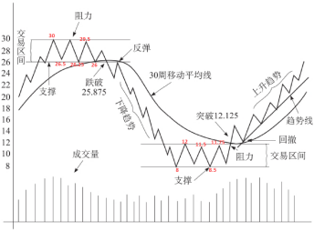
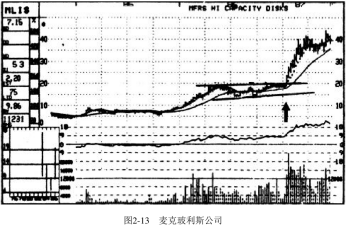

第一章 一切从这里开始
“低买高卖！”这就是致富捷径，对吗？错！这只是年复一年亏钱的普通人所信奉但实际却造成了他们亏损的陈词滥调。
在华尔街，还有其他许多貌似正确的说法，实际上都是错误的。譬如，你得阅读财务报表、看电视里的晚间商业报道才能了解整体经济和主要产业的发展；你需要向那些西装革履的所谓专业人士寻求建议。
这些不是致富的方法，它们不会让你赚钱。但许多投资者却把它们当作了打开财富之门的钥匙。
“低买高卖”是一种陈词滥调，而非行动指南。这阻碍了普通投资者掌握“高买高卖”的专业方法，而这就是我要教给你一以贯之去做的方法。
全方位了解财经新闻也不会给你的投资加分多少。
1、在这个计算机普及、即时通信设备发达的世界，在你还没来得及阅读相关报道时，最新的消息就已经对金融市场产生了影响。
2、另外，市场是根据预期而不是当前收益来交易的。为了成功，你得学会利用市场行为本身所提供的诸多线索。本书就是要教你发现这些线索，并把它们变成利润。
3、最后，听从经纪人和分析师等专业人士的建议也不会有太大帮助。这些专家的建议还不如你对着股票屏幕扔飞镖所得到的决定靠谱（一套飞镖的成本可比咨询这些人的费用要便宜得多）。专家们总是花费大量的时间同其他经纪人和分析师交谈，他们还去参加世界500强企业高管们举行的午宴，了解这些公司的经营信息。你只要参加几次这种午宴，便会发觉餐点和信息都已被搁在桌上很久了。
市场上真正的职业投资者与一线的专业交易者不会执着于这些带误导性的方法。他们决策的依据是市场行为，而不是新闻。当抱着陈腐教条的大众还在亏损中挣扎时，真正的职业投资者们却已经赚了大钱。一般投资者抱怨他们在股市上不够幸运，这种说法没道理。这根本就不是运气的问题（注：非运气即实力）。他们采用错误的规则参与游戏，如果他们不能学会获胜的规则，就会一直亏损下去。想要盈利，他们就必须坚持正确的方法——恰当地把握市场时机，合理地控制贪婪和恐惧这两个投资的大敌。
本书的全部内容就是——如何获胜！
在犯过很多错误之后，我终于学会解读市场提供给我们的非常明显的征兆，并在特定情况下做出策略性的反应。我会教给你一套市场规则，按照这套规则，你将承受更小的风险而获得更多的利润。这套规则不要求你钻研公司的财务报表，或者聆听公司新闻发言人有关提升股东回报的无聊言论。这套规则只需要你做好两件事：①控制自己的贪婪和恐惧；②发现并解读市场提供给你的明显征兆。
这就是我要在本书中教给你的内容，这些内容将使你成为一名成功的投资者。最重要的是，如果你真正掌握了这套规则，你每周只需要花费大约1小时来执行它。
经过了25年的历练，我明白了什么样的投资方法是有效的，什么样的是无效的。我已经将我的知识和经验提炼为一种在市场中可以持续获胜的方法。在过去15年里，我主编的杂志《专业价格分析者》(The Professional Tape Reader)成功地预测了每一个牛市和熊市，所采用的就是这种方法。在任何市场上，无论股票、共同基金、期权、股指期货，还是大宗商品市场，这套规则都是适用的。本书后面的内容对这些市场都会提及，但我们的重点是股票市场。
在进一步讲解之前我想强调，本书不是所谓的《暴富手册》。每年我都会看见很多类似的书籍，这些书籍绝大多数毫无出版价值。这样的书要么太过简略而缺乏实际操作性；要么太过空谈且理论化，看得让人头疼；更有甚者给了你不可能兑现的承诺。如果你想在下周二下午4点以前将1万元变成100万元，那你现在就可以停止阅读本书了。但是如果你很认真，希望学到无论在牛市还是在熊市都能长期持续盈利的方法，并想在接下来的几年中为自己积累一笔不小的财富，那么本书就最适合不过了。
还有一些事情你必须了解。你和我组成了一个团队。在学习我的方法时，你投入的精力越多，以后从市场中赚得也越多。这与参加教练指导的网球课程类似。看书只是学习的开始，重要的是，你必须实践。我会让你学得轻松，而你只要做好你分内的事，就能学会我的方法。
与其他深奥难懂、只有作者和一些学术人士才能够理解的技术分析类书籍不同，本书仅仅涉及很少的但对于盈利非常重要的深奥内容，其他不太重要的复杂内容都被去掉了。同时，本书按照逻辑顺序进行章节编排，逐步提高你的获利能力。为了帮助你检查对本书方法的了解程度，很多章节末尾附有测验。如果你发现自己对某一章掌握得还不够透彻，就应立即回头加强该部分的学习，直到真正掌握，再继续学习下一章。
我的投资哲学
接下来，你将具体地学到我分析和打败市场的方法。这肯定不容易，但也不像大多数投资者和交易员所说的那样难。
第一课是一致性。
在过去的25年里，我始终如一地遵守我的投资方法和投资纪律。这一点非常重要。不要这个星期是基本面分析者，下个星期又成了技术分析者［1］。不要这个月跟踪指标A，下个月又转向了指标B。找到一个好的方法，遵守投资纪律，并且坚持用它。如果用它始终不能奏效，才换一种新的方法。但是仍然要严格地遵守投资纪律，不能仅仅因为认为这次情况与以往不同，而放弃一种好的方法。
第二课是技术分析。
大多数投资者所不了解的事实是：如果你每天根据新闻上的基本面报道来进行投资操作，是无法持续赚钱的。这样的方法会导致灾难，对大多数新手来说就像一剂毒药。你必须了解市场的反应机制——决定股票价格的是对未来的预期而不是当前的基本面信息。因此，我采用技术分析的方法来解读市场对于已知资讯和未来预期所做出的反应。不要被“技术分析”这个词吓倒，所有的技术分析方法实际上就是对价量关系的研究，并据此对未来趋势做出判断。
在本书里，我会教给你一套新的规则和一门新的市场语言，它们会使得这个市场更容易被预测，更容易帮助投资者赚钱，更让人着迷。
技术分析不仅是一门科学，更是一门艺术。就像不是每个拿着画笔的人都能成为毕加索一样，不是每个研究图形的人都能成为约翰・迈吉［2］一样的技术分析大师。我会教给你这样的分析方法，对你来说它很新，恰当运用它会使你在市场上更容易获利。你从此便能只赚不赔了？当然不是，这与橄榄球比赛中一个四分卫不可能每次传球都成功是一样的道理。
你不必强求每次投资都成功，但只要坚持使用我的方法，成功的概率会大很多，你会是胜利者。大多数职业投资者都清楚一个秘密：只要你能做到让利润滚动起来并迅速止损，哪怕投资成功率不到50%，你也能够在市场上赚取可观的利润。后面的章节里我会告诉你应该如何正确地应对亏损的情况，这将是你所学习的内容中最有效的提升利润的秘诀。
注释
[1]基本面分析者依据一些因素来制定买卖的决策，这些因素主要包括宏观经济和行业的状况、具体某个公司的盈利表现等。技术分析者关注市场行为本身，将注意力放在价量关系上以解读市场的供求状况。
[2]约翰•迈吉JohnMagee)因1948年著《股市趋势技术分析》(7ec加AnalysisofStockTre刀ds)一书，被誉为“技术分析之父”。
为什么用技术分析
现在我们讲具体的内容。先把你脑中预设的关于市场的观念和看法完全扔到一边，准备好重新开始。就像在进行减肥计划时，首先需要清肠道一样，这里也需要你把既有观念抛开，然后一点点建立新的体系。
如果你是一个坚定的基本面分析者，也不必担心，学习本书不会清除掉你已有的知识体系。当你掌握了技术分析方法后，你就有能力综合这两种方法，更好地通过基本面分析确定买卖时机。
如果你对技术分析方法已经掌握得比较纯熟，你很可能跟我一样，忽视重要的新闻报道，而将注意力完全集中在图形所传递的信息上。这也是为什么每一期《专业价格分析者》的封面都会印有“价格轨迹说明一切”。这不仅是一个有趣的标语，也是一种有效的市场哲学。
简单来说，公司盈利、新产品、管理等所有已知的、被关注的基本面信息都已经综合反映在股价之中。这并不意味着我连悬而未决的并购这样重要的基本面信息都不关心，而是我很早以前就意识到，我们不可能在这些信息引起股价变动之前就发现它们，当我们发现时，已经太晚了。的确，我们会听到传言，但是每一百个传言中至多有一两个是真的，这样的概率无法使我们在市场上持续盈利。你得接受这个事实——除非你违法进行内部交易，否则你不可能在重要信息公布前得到它们。当你在报纸上读到某则消息时，已经来不及根据这一消息做出可以盈利的操作了。但是，请注意，一旦你知道如何解读量价关系和图形，你常常就能跟上内部人士的脚步，即使你并不知道内部消息。
如果股票XYZ在过去的几个月内一直以每周2万〜3万股的成交量在低位徘徊，突然，它以大成交量（周交易量为25万〜30万股）突破上限，也就是技术分析者常说的阻力线（稍后我将定义本书所有技术分析专业术语）。你不必是福尔摩斯也会发现其中的蹊跷。
现在请看皮德蒙特航空公司和光谱动力公司（见图1-1和图1-2）的股价图形。虽然你尚未受过训练（还得继续往下学习至少100页），还无法判断出它们的量价关系变化意味着什么，但凭直接观察也能知道，在1987年初与1987年中期稍前，在皮德蒙特航空公司和光谱动力公司分别做出重大公告之前的几个月，市场交易已经出现异常。当时我并不知道内情，但通过对量价关系的分析和解读，我在其收购消息和巨额盈利公布前推荐了这两只股票（见图1-1和图1-2中箭头指示处）。显然，大量的内部知情人士正在购买这两只股票。当你读完本书，回翻到此页你就会更清楚地意识到当时卖掉这些股票——就像成千上万的投资者日复一日所做的一样——是多么的愚蠢！它们正在不断上涨！更重要的是，你会知道为什么当时应该下买单。[1]

图1-1皮德蒙特航空公司

图1-2光谱动力公司
而且，并非只有从像并购案这么轰动的基本面消息上才能看出技术分析的好处。请看图1-3和图1-4关于哈拉斯公司和TS工业的股价图。事后来看，1978年是买入哈拉斯股票的合适时机，1986年买入15工业股票更是明智的。但是，两个有趣的事实应该会使你更能接受技术分析方法。
第一，这两只股票都在《专业价格分析者》中被推荐为“买入”（见图1-3和图1-4中箭头指示处）。
第二，当被推荐时，这两只股票都缺乏基本面的支持，但股价上涨迅速。当时，哈拉斯过去12个月的每股收益由2.41元[2]下挫到2.38元，之后6个月当它股价翻番时，每股收益进一步下跌到2.16元。TS工业的基本面更差，表现却更惊人。在1986年我们推荐这只股票时，其过去12个月的每股收益仅有37美分——正常但没有吸引力。在15个月后，当股价上涨超过200%时，每股收益却进一步下跌到9美分。
疯狂吗？一点也不！一旦你明白了市场运行的真实情况并非象牙塔里的教科书中所说那样，你就知道这样的例子遍地都是。并且当你掌握了我的技术分析方法后，就不再会感到迷惑不解，而是会利用这样的机会去获利。

图1-3哈拉斯公司
图1-4 TS工业
当我们放眼整个市场，这种模式就会在更大的层面上清晰地呈现出来。在1974年底，道琼斯工业指数从1050点迅速降至570点，市场上悲观气氛非常浓厚，报刊头条都是令人绝望的消息（见图1-5）。某主流财经报纸刊登了一则标题为“世界大萧条”的报道。这可是一则好消息！更明显的是，某主流新闻周刊刊出一幅漫画：一只大熊撞倒华尔街的楼柱。恐惧继续蔓延，人们觉得市场看起来会进一步跳水——可能跌至250〜300点！在一片悲观和恐惧中，技术分析指标明确显示：买进。一个新的牛市那时已经萌芽，道琼斯工业指数后来迅速回到1000点以上。

图1-5新闻集锦（1974年11月）
现在你是否得到了一些启发？
这也是为什么精明的职业投资者在利空消息中买入，而在利多消息中卖出。
股价在可怕的消息笼罩下形成底部；而在盈利大幅增长、股票分割等消息引起大众狂欢时形成顶部。
与此相反，普通交易员与投资者在利多消息中，买在顶部附近，而在利空消息中，卖在底部附近。所以，无论是普通公众持续的亏损，还是真正的职业投资者持续的获利，都与运气无关，而与他们所遵循的不同游戏规则有关。这与玩牌真的很像：职业扑克牌玩家清楚地知道各种组合出现的概率，拒绝贸然冒险，而新手往往根据自己的预测和感觉行事，最后总是一败涂地。
因此，你的投资哲学应该很简单：
1．绝不要在没有查看图形的情况下买卖股票。
2．绝不要在好消息公布时买入股票，尤其是在图形显示消息公布前股价已有明显上涨的情况下。
3．绝不要在股价暴跌时因为觉得股票便宜而买进。在持续的卖压下，你会发现股票会变得更便宜。
4．绝不要在下跌趋势中买进股票（接下来我会告诉你，如何明确地定义下跌趋势）。
5．绝不要持有处于下跌趋势中的个股，不论它的市盈率有多低。几个星期后，当更低的股价出现时，你会发现股价下跌的原因。
6．始终保持一致性。如果在完全相同的情况下，你有时买进，有时卖出，那么你的交易纪律就有严重问题。
懂得如何阅读图形和技术分析并不是什么高深莫测的科学，但也不是算命。非常简单，它是解读市场健康状况的心电图。医生在为你做诊断之前，会为你拍摄X光、验血、做心电图检查。一位称职的技术分析师也会对市场做类似的检查。好了，让我们继续前行，我将带你进入股票市场。
注释
[1]本书中的图形除特别说明外，均来自曼斯菲尔德股票图形，后文不再一一标明。
[2]本书中的计价单位“元”其实是“美元”，后文不再一一标明。
术语界定
在绘制你未来的致富之路以前，有一些基本术语你必须熟悉。图1-6会帮助你更好地理解它们的意思。即使你不是学习专业技术分析出身，你也很可能听说过这些术语，但关于它们确切的含义，你可能还有些迷惑。接下来的快速浏览就能使你清楚地掌握它们。即使你学过技术分析，也看看我是如何定义这些术语的，这样我们可以更好地沟通。这非常重要，因为这些术语是构成我的技术分析方法的一块块积木，在本书中它们会被反复地提及。所以，请花一两分钟把这些定义浏览一遍，确保你清楚每一个术语的含义。如果你在本章的学习上下了工夫，那么后面的内容将十分容易理解。如果你发现对某个术语不是百分百地明白，我建议你之后回到这部分内容把它搞清楚。
我不打算严格按照字母顺序来介绍这些技术用语，因为当你理解了某些术语的定义以后，能够更容易地掌握其他的术语。
首先，你需要把图1-6中股票XYZ的图形学习一下。先看一遍，记住你一开始对它的直观感觉。
接下来，一次研读一个定义，好好思考，只研究图形中与定义有关的部分。不要贪多，不要企图一次就记住所有定义，这完全没有必要。慢慢地学习这一部分对你是有意义的。在学习了几章以后，你会觉得自己已经是一个技术分析老手了。
下面，我们开始：

图1-6股票XYZ
支撑：
在此区域，一直下跌的股价开始稳定，接下来反弹并上涨（至少暂时是这样）。它就像一个地板。需要注意的是，不要像许多技术分析者一样，认为所谓的支撑是在某一个点上。实际上，它是一个区域或者说区间。在图1—6里，支撑区域最初是在26〜26.5这个区间，第一次低点在26，第二次在26．5，第三次止跌于26．25，第四次在26。
请注意，向下突破支撑区域的下限（在本例中是26）对股价而言具有非常负面的含义。一个给定的支撑区域受到冲击的次数越多，冲击持续的时间越长，一旦股价最终跌破支撑区域的下限，就是强烈的下跌信号。还需要注意的是，一旦股价向上突破或向下突破支撑区域，新的支撑区域又会在新的股价水平上形成。在股票XYZ的例子中，新的支撑区域在8〜8.5区间重新形成（见图1—6）。
阻力：
在这个区域，上涨的股价受到阻力，从而有下跌的可能（至少暂时是这样），接着又发生反弹，但未突破该区域。同样，一个给定的阻力区域受到冲击的次数越多（股价多次冲击该阻力区域的上限），冲击持续的时间越长，一旦股价最终向上突破阻力区域的上限，就是强烈的上涨信号。在我们的例子中，在30附近形成了第一个阻力区域，在重要的下跌阶段结束以后，新的有效阻力区在11.5〜12形成。之前，第一次反弹在12处受阻，第二次在11．5处受阻，接着又在11.75处受阻，最终突破这个区域的上限。始终记住，向上突破阻力区域的上限是明显的股价上涨信号。与前面相同，要认识到新的阻力区域随着股价的波动在新的水平上形成。在XYZ的例子中，第一个阻力区域形成于29.5〜30，然后又在11.5〜12形成。
交易区间：
这是买方与卖方进行“战斗”的中间区域。当一只股票处于上升通道时，买方力量明显强于卖方，导致股价上涨。而处于下降通道的股票恰好相反，卖方的力量远大于买方，使得股价下跌。在交易区间里，买卖双方力量较为均衡，双方的战斗在支撑区间（图1-6中为8〜8.5）与阻力区间（11.5〜12）之间进行。请注意图中还有另一个交易区间（26〜30）。
移动均线（MA）：
移动平均线是一个非常重要的技术分析工具，它能帮助你同时留意短期波动与长期波动。移动平均线的作用就是让你从无序的日间波动中看清楚长期趋势，从而免受无序波动的影响，尤其是在新的买卖程序加剧了每日震荡的情况下。在这些年里，我发现10周移动平均线最适合交易员使用，而30周移动平均线最适合长期投资者［1］。
在股票交易时，股价低于30周移动平均线的股票绝不能买入，尤其当30周均线向下时。而股价高于30周移动平均线的股票绝不能卖空，尤其当30周均线正在上升时。
对长期投资者来说，买入一只股票的理想时机就是30周移动平均线不再处于下降趋势，股价向上突破阻力区域，同时站上30周移动平均线的时候。
对一个准备操作的交易员来说，买入一只股票的理想时机是均线处于升势中，股价已经站在30周移动平均线以上时。理想的进场点是股价在新的交易区间盘整过后，回拉至移动平均线附近，再向上突破阻力区的时候。
向上突破：
向上突破指股票的价格移动到阻力区域的上限以上（图1-6中为12）。在这个例子中，股价越过阻力区的上限，我们认为突破在12.125处完成。就像是鸡蛋有不同的品级，向上突破也有不同的含金量。始终要记住两点：
（1）股价在阻力区域盘整的时间越长，最后的向上突破越可靠；
（2）向上突破时的成交量越大，预示着上涨的势头越猛（别着急，在接下来的几章中我会更加详细地讲解这些原则，现在你只需要记住这两条简单的原则就能使你的利润大涨）。
向下突破：
向下突破正好与向上突破相反，即股票价格移动到支撑区域的下限以下的时候（在图1-6的例子中为26）。在这个例子中，支撑区域下限被击穿时，向下突破就发生在25．875处。与向上突破不同，向下突破不需要根据交易量的急剧放大来确认，但成交量还是会有某种程度放大。
回撤：
股票向上突破交易区间明显上升以后，常常会有一次获利回吐的调整，将股价带回初次向上突破点（本例中为12．125），此时是加仓的理想时机（如果回撤伴随着成交量的大幅萎缩就更好了）。相反地，股价向下突破支撑并继续下跌后，常常会反弹逼近向下突破点（本例中为25．875）。如果此时的成交量很小，该点就是理想的卖空介入点。
趋势线：
如果你用一把尺子连接某个股票图形里任意两个低点，你就会得到一条趋势线。但是，一条普通趋势线与一条重要趋势线之间的差异非常大！一条重要趋势线至少会碰到三个低点。
图1-7天际线公司股价图
图1-7画的就是一条重要趋势线，这条线被触及了四次，在第五次试探时才被跌破。趋势线被突破时好比警报拉响，因为这意味着趋势方向的改变。
股价跌破一条上升的趋势线意味着下跌趋势即将来临；
而股价突破一条下降的趋势线则意味着上涨的开始（注意图1-7，当天际线公司的股价向下突破它的上升趋势线后，出现了迅速跳水）。

还有一点也很重要：上升趋势线的斜率越大，以其向下突破来预示股票进入下跌趋势的可靠性就越差。如果你画出了一条非常陡峭的上升趋势线（见图1-8），一次向下突破击穿它时，可能仅仅意味着一只股票（或一个市场指数）现在涨势放缓——因为此前的涨速不具有可持续性。
趋势线越接近水平（见图1-9），当它被向下突破时，负面意味越强。
相反，如果一条下降的趋势线倾斜的角度越大（见图1-10），以其向上突破来预示进入上涨的可靠性就越差。它可能仅仅意味着（尤其是当股价低于长期移动平均线时）股价跌速放慢。
下降趋势线越接近水平（见图1-11），当它被向上突破击穿时，牛市意味越强。当股价向上突破一条重要趋势线，并在数天之内站上上扬的长期移动平均线时，就释放出了最强烈的多头信号。相反，当股价向下跌破一条重要的趋势线，并在数天之内跌破长期移动平均线时，就释放出了最强烈的空头信号。
上升趋势：（见图1-6）
上升趋势就是在几周甚至几年的时间里，某只股票的价格（或市场指数）高点越来越高，低点也越来越高
下降趋势：（见图1-6）
下降趋势就是在几周甚至几年的时间里，某只股票的价格（或市场指数）高点越来越低，低点也越来越低
其他术语如交易员、投资者、短期和长期等定义就相对比较主观了。对你来说很重要的是要知道当我用这些术语时指的是什么，因为某个人对投资的定义可能是另外一个人对于交易的定义。
交易员：
我在本书中提到交易员时所指的并不是那些早上买入、下午卖出的人。我所说的交易员是指那些想抓住2〜4个月股价大幅变动的人。我认为这是明智的交易。周一买入、周二卖出的人只能使其经纪人变得富有。
投资者：
我认为投资期限的上限是12个月。当然这并不意味着你不能持有股票更长时间，但是我不认为在3、4或5年的时间跨度内谈论市场（或股票）有什么意义，因为在这么长的时间里，有太多的变数和太多的周期会发挥影响。
短期：根据我的定义，短期是指1〜6周的变动周期。
中期：中期指6周〜4个月的变动周期。
长期：我对长期的定义是4〜12个月。股价变动的主要趋势是长期的，这也是最重要、最需要关注的。如果你的投资与长期趋势一致，你就能够弥补短期的损失。
相对强度：
相对强度指的是某只股票（或某个股票组合）的表现同整个市场的关系。例如，如果股票XYZ价格上涨了10%，同期整个市场指数上涨了20%，那么虽然XYZ的股价上涨了，但它相对强度弱。如果股票XYZ价格下跌了10%，同期市场指数下跌20%，那么尽管XYZ的股价下跌了，但它相对强度较好。计算相对强度的公式很简单，即用某只股票（或某个股票组合）的价格除以整个市场的平均价格（市场指数）。
卖空：
卖空是最容易被误解的概念，也是最未被充分利用的技术。专业投资者们常常运用这种手法，但是90%的个人投资者从不尝试。卖空是指当预计股价在未来会下跌时，就对你当时并未持有的股票下卖单。例如，你在20元的价格上卖空股票XYZ，你需要向你的经纪人借入这些股票用以交易。如果股票XYZ的价格如你预料跌至10元，你就在市场上买入股票XYZ偿还给你的经纪人。在这一过程中，每股你就赚了10元。所以，谁说熊市不能获利呢？
我会在适当的时候以整章的篇幅说明卖空。
现在你已经读了每个术语的定义，也了解了它们的基本含义，请回到图1-6再学习一遍。你现在应该能更深刻地理解它们了。如果在接下来的章节中，你忘了某个术语的定义或对它没有百分百的把握，请重新阅读本部分的术语定义。
下一个有意思的概念就是图形。在你学习图形之前，有一个小测试，你可以看看自己对于本书基本要素的理解。测试后面附有答案。
测 试
1.股票XYZ价格从50元涨至60元，涨幅为20%。道琼斯工业指数同期涨幅25%。这是相对强度较好的一个例子。正确 错误
2.一条趋势线被触碰的次数越多（未被突破），则该趋势线越重要，而它最终被突破时所释放的信号越强。
正确 错误
3.一条上升趋势线越陡峭，它被跌破所预示的意义就越不重要。正确 错误
4.股价进入交易区间时是多头信号，因为这显示买方力量比卖方强大。正确 错误
5.某只股票的价格在交易区间内。第一次，跌至8元然后反弹，第二次，跌至8.5元然后反弹，第三次，跌至8.25元然后反弹。整个8〜8.5元可以被看作支撑区域。正确 错误
6.阻力区域被触碰的次数越多（未被突破），最终的向上突破多头意味越浓。正确 错误
7.不管某只股票的基本面有多好，只要其股价在下降的30周移动平均线以下，千万不要买入。正确错误
8.一只股票的价格伴随着成交量的萎缩向上突破阻力区域，这是合适的买入时机，因为这表示卖方的力量越来越弱。 正确 错误
答 案
1．错误。该股票涨幅不如市场指数，相对强度较差。
2．正确。
3．正确。
4．错误。交易区间是一个买卖双方力量均衡的区间，形势如何发展还不确定。
5．正确。
6．正确。
7．正确。
8．错误。股价向上突破伴随着成交量的放大才是好的买入时机。成交量萎缩的突破很可能是虚假的，因为缺乏强有力的买方力量推动。
注释
[1]30周移动平均线的计算方法是将本周五晚上的收盘价与前面29周周五的收盘价加总，把上述值除以30所得到的结果即本周图形所应描绘的点（很明显，某股票的10周移动平均线是本周五的收盘价与前面9个周五的收盘价加总，再除以10）。
多种多样的图形
图形的种类很多，而且可以以不同的时间周期为单位，如以日、周、月等为单位。当我向你介绍所有种类的图形时，我会告诉你对于交易员来说哪一种是最简单、最有效的，对于投资者来说哪一种是最简单、最有效的。两种基本类型的图形是我们应该熟悉的。
 一种是线图（linechart）或称条形图（barchart），它描述在一定时期内股票的交易量以及最高价、最低价和收盘价。另一种图形是点数图（见图1-12），只记录价格的变动，没有时间和交易量。因此，如果某只股票价格在某天内大幅震荡，那么当天就会被记录数次。在未来的几天内，如果该股没有变化（都以相同价格收盘），则不需再记录，因为没有价格变化可供记录。点数图是市场行为的简洁摘要，对于发现重要形态、确认支撑区域（股价停止下跌的地方）和阻力区域（股价停止上涨的地方）非常有用。
一种是线图（linechart）或称条形图（barchart），它描述在一定时期内股票的交易量以及最高价、最低价和收盘价。另一种图形是点数图（见图1-12），只记录价格的变动，没有时间和交易量。因此，如果某只股票价格在某天内大幅震荡，那么当天就会被记录数次。在未来的几天内，如果该股没有变化（都以相同价格收盘），则不需再记录，因为没有价格变化可供记录。点数图是市场行为的简洁摘要，对于发现重要形态、确认支撑区域（股价停止下跌的地方）和阻力区域（股价停止上涨的地方）非常有用。
 当分析股票时，我会把点数图和其他图表综合起来用，但我从不单独用它，因为没有成交量和均线这些信息。而且比起线图或者条形图，点数图更不容易掌握，因此在本书中我打算主要讲解条形图。只要合理使用条形图，你会收获可观的利润。
当分析股票时，我会把点数图和其他图表综合起来用，但我从不单独用它，因为没有成交量和均线这些信息。而且比起线图或者条形图，点数图更不容易掌握，因此在本书中我打算主要讲解条形图。只要合理使用条形图，你会收获可观的利润。
现在我们回到条形图。选择多长的时间区间实际上并没有关系，但为了更好地讲解（见图1-13），假设我们谈的是一天的交易情况（日线图）。如果这一天的最高价是18元、最低价是16．5元、收盘价是17．5元，连接最高价和最低价从而得到一条直线，并在收盘价处划一条水平的短线，就得到了一张条形图。对于成交量，在同一天的图形底部纵轴上标有不同的数值。如果当天的成交量是25000股，那么从25000股的成交量水平向下划线至0，便得到了交易量线。
周线图与日线图不同的地方仅仅在于把一周（从周一至周五）而非一日的最高价、最低价和收盘价标出来，并且标出这一周的成交量。在更长时间的月线图上，只是把整个月的相关数据（最高价、最低价、收盘价和整个月的成交量）标出来，其他与周线图和日线图是一样的。图1-14、1-15和1-16就是这三种图形的例子。
这三种不同周期的图形各有用处。日线图（见图1-14）的数据精确度较高，对于短期交易最有用。

周线图（见图1-15）既提供了较好的数据精确度（短线交易员还是应该使用日线图），又对从事中期交易的交易员和投资者了解股价主要的变动走势有非常重要的价值。
月线图（见图1-16）对于需要判断股价在几年中的走势的长期投资者来说，是一个很好的工具。
本书中，当我们提到图形时，重点会放在周线图上，因为对于投资者来说它是最全面的。不过，请注意，这三种图形都是非常好的工具，都能服务于相应的目的。
解读周线图
现在我们开始进入实质性内容，学习周线图（见图1-17）。如果你以前没有学过也无须担心——我保证你在很短时间内就可以掌握它。当然，如果你已经学习过技术分析，可以快速浏览接下来这几页。这样，大家都能有大致相当的起点。
不是有关图形的方方面面我都会讲——其中许多内容是很基础的，另有一些让人困惑且用处不大。我们要学的是真正重要并能帮助我们获利的图形要领。

1．首先看标有最高价、最低价和收盘价的条柱。股价是图形中最重要的要素，因为随着时间的积累，股价的变动会形成一定的形态，为我们判断未来股价走势提供线索。
2．第二个要素是周成交量。价涨量增、价跌量减是积极的信号。就像我们在前面提到，在后面还会多次提到的一样：向上突破伴随成交量的巨幅放大是非常重要的。成交量大意味着急迫而强大的买盘将会推动股价进一步上涨。
3．图形中的第三个要素是30周移动平均线。在本书中的周线图上所提供的30周均线并非每周数据等权重的简单移动平均线(注：应是ma均线)，在这条均线上，离当前的日期越近，数据被赋予的权重越高。这样的处理方法使得移动平均线对近期的变动更加敏感，可以迅速地调整方向。
这样加权后的移动平均线的缺陷在于，它会导致更多的“锯齿”信号［1］出现。尽管如此，因为30周移动平均线是长期的移动平均线，所以它所包含的信息还是相当有意义的。记住，如果一只股票价格低于30周移动平均线，不管根据基本面判断其股价如何便宜，即便其最近经历了大幅下跌，也千万别买入。股价表现给你发出了清晰的信号：这是一个有虫的苹果！根本不要考虑买入。相反，如果一只股票的价格高于其正在上升的30周移动平均线，不管其市盈率有多高，都不要对它进行卖空操作。
注释[1]“锯齿”用于表明一种市场状态，在剧烈的价格变动之后紧接着出现一个反向变动。译者注
4．第四点要注意的是股价在各年中的长期走势（注：其实就是长期图表的走势）。在本书中图形的左下角有各年度的最高价、最低价指标，表明股价的长期走势。这个指标的用处就在于帮助你将目前的股价放在一个历史背景下看待。

当1986年固特异轮胎公司的股价向上突破至新高（见图1-18）时，迅速看一眼长期走势图就可以知道这也是几年来的新高。这是一个非常好的形势，股价上涨已经没有了阻力。由于股价打开了新的上涨空间，没有需要解套的卖方，因此股价可以涨得更高。固特异轮胎公司的股价在1986年末至1987年初的表现正是如此：其股价在向上突破前期高点37元后，打开了新的上涨空间，几个月内的涨幅就超过前几年的涨幅。
另一方面，如果股价下跌创出年内新低，就是一个危险的信号了。如果查看长期走势图发现这个价格也是数年来的最低点，那么你应该意识到这是一个明显的熊市信号，应该回避。关于一只股票向下突破，并且下方没有支撑会发生什么，坎贝尔资源公司（见图1-19）给我们提供了一个教科书般的例子。该公司股价跌破7．5元，最终一直下跌至75美分时才发生反弹。

5．最后一个重要内容就是相对强度线。只要这条线是向下倾斜的，即使股价向上突破，也不能买入这只股票。下行的相对强度线意味着这只股票的表现不及整个股票市场的平均表现。
如果相对强度线向上倾斜，即使股价向下突破，也不要进行卖空操作。
另一个运用相对强度线的方法是观察这个指标从负到正的情形。如果此种情形出现，则是一种利好的信号。在阿姆达公司（见图1-20）和纽曼矿业（见图1-21）的例子中［在1986年的夏天，《专业价格分析者》推荐过这两只股票（见图中箭头指示处）］，当股价向上突破时伴随着相对强度线从负到正，买入后大量获利的可能性就大大增加了。
相反，当股价向下突破伴随着相对强度线（见图1-22和图1-23）从正到负，你就要当心了！无论根据基本面判断它的股价如何便宜，都必须把它作为熊市情形对待。如图所示的海洋钻井公司和贝茨公司的例子，尽管相对强度线跌至0以前，它们的股价就已经明显下跌了，但当它们的相对强度线跌至0以下后，其股价出现了更大幅度的跳水。
就是这些了，关于图形的分析，有许多可学的，这个主题下有很多优秀作品，但你通过本书来学习的回报是最高的。用这些简单而重要的工具，你就可以开始描绘未来的财富之路了。
第二章 读千份盈利预测不如看一眼走势
本章的标题是我所确信的。
你看看像通用汽车这样的股票，虽然1981年公司盈利增长，但股价却从58元跌到34元；而像格林威治制药公司这样的股票，虽然公司亏损，但1986~1987年其股价却从3元涨至19元！所以，记住：“走势说明一切”是千真万确的，我们要做的就是学会如何正确解读走势。
现在准备开始攻读“技术分析学位”吧。你要学的是如何运用我教给你的方法，让市场看起来不那么神秘莫测并能给你带来利润。请看股价阶段图（见图2-1）。人们常说“一幅图胜过千言万语”，这话不错，图2-1就是一个完美、鲜活的例子！请仔细看图2-1一分钟。从现在起你就要开始学习如何分析股票和市场了。一旦你掌握了这些盈利性的技术，在股票市场、期权市场、共同基金、大宗商品或者其他任何你能说得出名字的市场上，你的操作都会变得更加轻松，而且更具盈利性。你会有能力翻阅任意一本股票图形书籍，并且能够立即发现值得进一步研究和操作的几只股票，同时，不管报纸头条吹得如何天花乱坠，你都能淘汰那些根本不值得考虑的股票。
你只需要记住一个最基本的事实：任何一只股票都必然处于如下四个阶段中的一个，关键就在于如何确定某只股票所处的具体阶段。
图2-1显示了一个主要周期的四个阶段：
（1）底部阶段；
（2）上涨阶段；
（3）顶部阶段；
（4）下跌阶段。
第一阶段：底部阶段
股票XYZ持续下跌几个月之后，下跌动能终于耗尽，它开始横盘，实际上这是由于买方和卖方的力量逐渐均衡。在此之前卖方力量远强于买方，这也就是股价大幅下跌的原因。横盘时，交易量通常会萎缩直至枯竭，最终形成底部形态。不过在第一阶段后期，交易量通常会开始放大，而价格却基本不变。这意味着悲观的投资者抛售股票已经不会再使股价下跌，因为买方已经开始从卖方手中接手股票并接受了当前的价格，且未要求大的价格折让。这是一个利好的信号。
这个阶段的图形表现是：
①最初，30周均线停止下降并开始走平。股票间歇性的涨跌使得股价在均线上下震荡。
②在此阶段，价格通常会在交易区间的底部支撑价位和上方阻力价位之间来回震荡。此阶段可能会持续数月，有时甚至长达数年。
这个阶段也是很多市场参与者急于进入、希望抄到股价低点的时候。但是此时买进没有太大的好处。即使你抓住了低点，但你的资金可能会被困在这个阶段很长时间而股价却没什么变化。时间就是金钱。更糟糕的是，很多新手往往不够耐心，在沮丧地等待了数月后，在股价飙升之前将股票卖了出去。

现在学习图2-2。伯利恒公司股价正处于第一阶段（阴影部分）。
1、注意，在从22元大幅下跌至4．875元之后，该公司股价开始上涨，并站上了移动平均线。
2、接着，一次小幅下跌又使得其股价稍稍低于均线。
3、第二次上涨伴随着交易量的放大，向上突破了水平的趋势线，同时其均线也开始抬升。
4、当伯利恒的股价超过9．835元时，它就已经准备好进入第二阶段了，股价在接下来的几周内涨至17．25元。
第二阶段：上涨阶段
理想的买入时机是当一只股票最终脱离底部阶段，进入更有活力的上涨阶段时。股价突破阻力区域上方并站上30周均线，此时成交量应该显著放大。这就是第二阶段上涨阶段的开始。不过，在第二阶段真正具有活力的上涨来临之前，在最初的上涨后至少会有一次回调。这次回调使得股价跌回至突破点附近，这是低风险买入这只股票的第二次良机。（注：即离开，拉回）
不要在意每股几分钱的成本差异，例如，向上突破发生在12．125元，回调时可能跌至12．375或12．625元。回调的幅度越小，向上的力量就越强。特别有意思的是，在向上突破点——最好的买入时机——公布的基本面消息通常都是负面的。除非你的经纪人认同技术分析，否则此时他会建议你不要买进这只股票。
在第二阶段的突破发生后不久，30周均线通常会开始转而上扬。每一次上涨的高点都比前一次的高点还要高，对于买方来说，这感觉太美了。另外，低点也一次比一次高。这一点非常重要！涨势再牛、再强劲，也不可能只涨不跌。
图2-3国际纸业的走势证明了我所说的。当1986年初这只股票进入第二阶段之后，股价所有的调整都高于上升的30周均线，并且每次上涨都带领股价创出新高。市场总是很狡猾，这就是为什么多数投资者在市场上经年累月地亏损。股票市场（或其他类似的任何市场）总是不让大多数人赚钱，而给予少数精明的职业投资者丰厚的回报。上涨趋势中也有下跌。只要所有的这些震荡和波动发生在上升的30周均线以上，就不用担心——一切顺利进行，大额利润正在累积。
令人欣喜的上涨持续了几个月之后，随着基本面的利好消息公布，越来越多迟到的投资者赶上了股价上涨的快车。最终，股价上涨减缓，离它的移动平均线越来越近。移动平均线的上升斜率也明显减小。在这个时候，“持有”就可以了。尽管仍然处于第二阶段，但股票的交易价格已经远高于支撑水平和均线，各个投资社区都在谈论它，股票已经超买，不应该再买入了。这时如果买入，你就会承担相当大的风险。
从投资的角度来看（下一章我们会从交易的角度出发），合适的买入时机应该是在最初的突破点，或者最初突破点后紧接着的回调处（见图1-6中股票XYZ在12.125元处）。此时，股价接近于底部阶段，继续下跌的风险很小而上涨的可能性很大。回报／风险比率完全对我们有利。然而几个月后，形势已经明显不同。越接近第二阶段的后期，股价的波动就越不规律，因为先前的买家非常想脱手以保住自己丰厚的利润。而市场的新手们接手这些股票，以为自己发掘了牛股，捡到了便宜。此时，这只股票就成了市场谣言和各种相关报道讨论的对象，同时买卖双方的决定也会受到情绪的较大影响。

我已记不清自己见过多少次因为某只股票的买入时机不对，导致整个投资组合严重亏损的情况。要遵守投资纪律！如果你是一个长期投资者，那么仅在第二阶段初期合适的进入点买入（在股票XYZ的例子中为12.125元附近）。如果你没有在合适的点买入，不要焦虑，继续关注并且坚持只以应该买入的价格买入。一以贯之。
要么买对，要么不买。这里需要的只是一点常识。如果你在12.125元处未能买入，在12.875元处买入不算大错，但在25元或26元处还要买入就大错特错了！如果你已经错失了一只好股票，不要觉得难受，你可以从市场上的上千只股票中进行挑选，总会有处于合适价位的好股票。就像我们打车一样，虽然你错过了第一辆，但下一辆很快就会到来的。
第三阶段：顶部阶段
终于，所有的好事都走到了尽头。在股票市场上，这以第三阶段顶部形态出现为标志，这时，上涨的动力消失，股价开始横盘。图形现象背后的实质是买卖双方再次势均力敌。在第二阶段，买方力量要远强于卖方。现在上涨结束了，股价处于均衡状态，此时形成的形态如同第一阶段的镜像。
在第三阶段，成交量通常较大，股价波动剧烈。如果你听过一种说法，说某个股票被“搅拌”（以大成交量横盘），第三阶段就是这样的例子。巨大的成交量是由两方面原因引起的：
①对买方来说，他们因基本面的利好消息和各种“故事”而兴奋；
②与此同时，之前低价买入的人急于将获利盘抛售。
下面就来说说所有这些在图形上是怎么表现的。首先，30周均线的向上斜率变缓继而开始走平。在第二阶段里，股价即使下跌也仍然会在移动平均线之上，而现在股票价格在均线上下震荡。一旦第三阶段的顶部开始形成，交易员就应该带着已获利润离场！而投资者有更多的回旋余地，我建议投资者将一半的仓位出清以锁定利润。因为股价有可能再次向上突破，开始又一个第二阶段上涨，这样你剩下的一半仓位就能在新的第二阶段里赚取再次上涨的利润。但为了保护你剩下那一半仓位的利润，你得在稍低于新的支撑区域底部（见图1-6中的25．875元）设置一个保护性止损卖单。现在，知道这是一个好的市场策略就可以了。在下一章里，我会告诉你如何正确地设置止损位——一百个投资者中知道如何操作的还不到一个，这是在股票市场成功真正的秘诀之一。

图2-4中ICH公司的图形完美描述了第三阶段（阴影部分）。注意移动平均线是如何停止上升，股价又是如何跌破均线然后短暂收复的。尽管当时这只股票的市盈率只有10倍，并且盈利还在上涨，但明显它已经陷入了困境。一旦股价向下跌破24元，第三阶段就结束了，第四阶段登场。在第四阶段，这只股票在接下来的六个月里跌幅超过50%，这发生在史上最大的牛市中！
在第三阶段你必须仔细调整自己的情绪，因为盈利增长、股票分拆等关于股票的利好消息正热火朝天，让人兴奋不已。此时，同以往一样，你仍应该始终相信图形，因为它与你我不同，它不带情绪。通过学会一以贯之地跟随市场留下的图形脚步，我们还可以学会冷静、沉着并认真计算，而此时其他的投资者还反复被贪婪与恐惧综合征折磨着。因此，你要记住：无论基本面信息如何好、利好消息如何可信，你都绝不要在这个阶段买入某只股票，因为此时回报/风险比率对你十分不利。
第四阶段：下跌阶段
在这个阶段，之前维持股价的各种因素，让位给充满疲劳、压力、恐惧的卖方。在图形中是这样表现的：
在交易区间震荡运行之后，股价最终跌破支撑区域的下限。股票XYZ的图形（见图1-6）显示支撑区域在26~26.5元，阻力区域在30元左右，还有一条基本水平的移动平均线。与向上突破需要明显放大的成交量来确认不同，第四阶段的向下突破并不一定需要成交量的明显放大来确认。
一个成交量放大的向下突破跟着一个成交量萎缩并拉回突破点的反弹是非常危险的信号。我也见过很多股价向下突破进入第四阶段后成交量相对较小的例子，接下来的几个月内股价照样跌得很厉害。因此，向下突破中的成交量放大意味着更加糟糕的情况，但也不要错误地认为成交量不大就比较安全[1]!不管怎么样，你都应该卖出这只股票。
如果你的经纪人信奉价值投资，他可能试着说服你不要卖出某只股票，因为它的盈利和其他的基本面都还不错。当第四阶段开始的时候，人们还常常以为这是股价的一次向下调整。这够傻的。一旦股价向下突破，进入第四阶段，那么它上涨的可能性就非常小了（一旦向下突破发生，股票XYZ原来的26~26.5元的支撑区域就成为新的顶部，或者说是阻力区域），而下跌的风险很大。
注释[1]当寻找卖空标的时，放巨量向下突破的更好，因为巨大的成交量意味着卖方十分急迫，通常这种股票下跌得非常快。
现在，停下来，想一秒钟，然后对自己做个保证。保证自己绝不会在第四阶段买任何股票。同时保证自己绝不会持有任何跌入第四阶段的股票。在本书后面的章节里，我会告诉你如何设置止损位以使你的后一个保证很容易做到，这样一来，当你的股票进入第四阶段，卖出就会自动执行，以防你犹豫不决、思考再三。这会是一种机制和纪律。
不要幻想力挽狂澜。在第四阶段里硬撑的代价很大，这样做的人有“受虐倾向”。眼睁睁看着自己辛苦赚来的钱白白流走一点都不可取，也一点都不能塑造强硬的性格。为了学习关于市场这极其重要的一课，你应该听听肯尼•罗杰斯的歌曲《赌徒》。我不是开玩笑，这短短一首歌中所蕴含的市场策略，比华尔街流传的陈词滥调有用得多。想想这些智慧之语：“你一定要知道何时拥有，知道何时加注，知道何时离开，知道何时逃跑。”
无论你玩的是扑克牌还是股票市场，学会根据概率来参与游戏以及采用专业技巧是十分重要的。
如果在阅读本书之后，你没有学会其他的市场操作方法，只学会了不在第四阶段买入或持有股票，我能够百分之百地保证你的平均投资收益率会大大提高。当你看见下一年的个人所得税申报表，你会怀疑是会计搞错了。当然，不要错误地理解我的意思——要想成为真正的市场大赢家，你还有很多东西要学习，但不要在第四阶段买入或持有股票这个策略太重要了，所以我要再三强调。
“市场分析师”肯尼•罗杰斯接着告诉我们：每个赌徒都明白生存的秘诀是，要知道扔什么牌，留什么牌，因为每手牌都可能赢，每手牌都可能输。”
这个观点也是正确的。多年来我见过许多投资组合，其中上涨的股票多于下跌的股票，但最终这些投资组合却损失惨重。新手们在赚了点小钱之后就迅速卖出了上涨的股票，而守着那些下跌的第四阶段的股票。然而，成熟的投资者会稳拿第二阶段的股票，“吃到”所有涨幅才离开，同时迅速抛出有问题的股票。因此，“知道扔什么牌，留什么牌”非常关键。
回想一下你自己的投资经历。有多少次你持有的股票应该在50元卖出，而你却一直看着它跌至47元、45元甚至40元？你的经纪人是如何握着你的手向你信誓旦旦地保证这只股票还值50元的？遗憾的是，这是在误导你。你的经纪人可能还会跟你说：如果这只股票在50元买入是合算的，在40元买入就更加合算。于是，你没有卖出。而且还错上加错在40元加仓了，这可是危险而糟糕的策略。
你告诉自己只要股价回到45元，就能够解套。几个月后，这只40元的“便宜”股票跌到25元，下跌背后的基本面利空消息此时众所周知了。第一阶段底部开始形成时，你承受着巨额亏损将所有的股票卖出。
上面的故事是不是听起来很熟悉？这样的噩梦不会再发生在你身上了，股价下跌时，你不会再任由摆布，期望底部早日到来。相反，你可以掌控这种情形，抛掉任何有可能进入第四阶段的股票——无论你此时是盈利、保本，还是亏损。
请记住，市场有自己的运行机制，它不知道也不关心你是在什么价位买入的。所以当你判断某只股票即将下跌时，果断地跟它说再见！否则你的盈利就会消失，你的小损失会扩大成巨额亏损。

我们回到图1-6的股票XYZ。请注意它首先在25.875元处向下突破，然后跌至23元，这是第一波下跌。接着，由于想以“折扣价”买入的投资者觉得此时的价格比之前便宜而进行买入，所以股价一次或几次反弹至突破点附近。从那以后，真正的下跌趋势开始了，移动平均线也开始下降。
从回报／风险比率的角度看，这是整个股票周期中最危险的时候。当你想到自己不会再陷入这样的困境，并且盈利能力更强时，那将多么令人兴奋。当你打开行情软件，你会发现这只股票仍在大量交易——还有人在买入。很高兴那不会是你。
在第四阶段，每一次下跌都创出新低，而每一次超卖后的反弹都低于前一次的高点。这是典型的下跌趋势。更糟糕的是，所有的这些负面表现都发生在下降的移动平均线的下方。遗憾的是，正是在这个阶段，初学者以为股票已经跌得差不多了，以捡便宜的心态去买入。然而，捕捉下落中的火星注定会将自己灼伤！
请看图2-5中利维兹家具公司20世纪70年代初期以后的走势。你会发现在第四阶段（阴影部分），初学者妄图抄底，结果让其辛苦挣来的资金遭受了毁灭性打击。为了不掉入这样的陷阱，你应该学习图形并解读它提供的信息，它让你在追求大额利润的过程中保持冷静，遵守纪律。
买的是数字
现在你理解了阶段分析的概念。研读图2-6至图2-9所示的四个图形，每个图形聚焦于一个阶段，确保你同意我对图形阶段的划分（记住：移动平均线是个股技术分析的重要起点）。
股价阶段测试
下面有一个小测试。仔细观察下面的股票图形，说出每个图形当期处于哪个阶段。研究它们直到你与答案中的判断一致，因为只有现在清楚地理解我的方法，才能保证你未来获利。答案在这些图形后面。

答案
1．第四阶段。移动平均线下降，股价位于其下方。
2．第二阶段。移动平均线上升，股价位于其上方。
3．第四阶段。移动平均线下降，股价位于其下方。
4．第一阶段。移动平均线走平，股价位于阻力位下方的底部区
5．第三阶段。移动平均线走平，第二阶段大幅上涨后股价围绕均线上下震荡。
6．第一阶段。移动平均线走平，股价位于阻力位下方的底部区域。发生于第四阶段的大幅下跌之后。
7．第四阶段。移动平均线下降，股价位于其下方。
8．第二阶段。股价向上突破重要的阻力位：9元。第一阶段完成。股价站上抬升的均线。
9．第三阶段。在第二阶段大幅上涨后，移动平均线趋向水平，股价围绕均线上下震荡。
10．第二阶段。股价位于移动平均线上方，这样的情形持续时间超过1年，移动平均线是上升的。
11．第三阶段。这幅图形十分诡异，因为潜在的顶部很大，筑顶时间长达一年。然而，移动平均线依然保持水平，股价围绕其上下震荡。此外，股价始终在它主要的支撑区域以上，所以还没有进入第四阶段。
12．第二阶段。股价远高于上升的移动平均线。
真实的世界
现在你对股价图形分析已经有一些了解了，我们来看看现实生活中在第二阶段大幅上涨和第四阶段灾难性下跌的例子，以此来说明这个方法并非“纸上谈兵”。事实胜于雄辩。虽然没有什么预测市场的方法是万无一失的，但结果可能好到令你难以置信！
在接下来的章节中，我会教你如何按计划在一些不利的情况下将负面结果降到最小。请看图2-10至图2-13这四幅图形。应该按照《专业价格分析者》的推荐在它们进入第二阶段时买入这些股票——那时它们都刚刚向上突破且处于第一阶段底部（见图中箭头处）。
施泰力住房公司（见图2-10）的股价在1975年初站上10元时，筑好了第一阶段底部。接着其移动平均线开始上升，股价也一路上涨、上涨，逐渐抬升。在那以后6个月里，股价上涨到24元，其间所有的回调都高于上升的移动平均线，年涨幅高达280%！
ARA服务公司的图形（见图2-11）显示，在1982年当它以巨额成交量向上突破30元的时候，出现了跟施泰力住房公司同样的上涨模式。在后来9个月里，其股价上涨到55元左右，年化收益率高达100%。同样，所有的回调都没跌破上升的移动平均线。
特雷克斯公司（见图2-12）股价向上突破10元时也伴随着巨额的成交量。毫不意外地，这只股票在其后3个月里的年化收益率达到了惊人的689%。我们再一次注意到它所有的向下回调都明显高于上升的30周移动平均线。

最后一个关于第二阶段上涨的例子是《专业价格分析者》于1986年末推荐的麦克玻利斯公司（见图2-13），当它以巨额成交量向上突破19．5元后，短期内年化收益率就达到了250%。这只股票是四个例子中唯一不是在股价突破第一阶段并进入第二阶段时被推荐的。事实上，这只股票在1986年初就向上突破10元附近的阻力区域进入了第二阶段。接着，它看起来很像要形成一个第三阶段顶部（在15元附近的支撑区域与19．5元附近的阻力区域之间）。结果，当它以大成交量站上19．5元时，它迎来第二次突破的成功。这种情况相对比较少见——看似要形成第三阶段顶部，但最后再次进入第二阶段。这是一种强有力的形态，对交易员来说十分有利可图。所以，长期投资者大多在底部附近买进，此时风险极低，而交易员则要留心本例这种情况，因为它们通常非常强劲而快速！
下面再来看另外几只股票（见图2-14至图2-17），如果当它们完成第三阶段进入第四阶段时你没有将它们卖出，就会极大拖累你的投资组合。令人欣慰的是，这四只股票在它们进入第四阶段时，都被《专业价格分析者》列为“卖出”。
回望1973年，雅芳是在那个时代所谓的“只管买进”的股票之一。许多聪明而懒惰的资金管理者说服他们自己：对于这些始终上涨的股票他们所需要做的唯一决定就是何时买入。千万不要相信这样的童话。世界上没有一项投资是买入以后不用管的，无论是股票、黄金、房地产、珠宝，或是商品期货。所有的投资都有周期性，一旦你在下降过程中（第四阶段）还持有它们，你会在财务和情绪上受到双重打击。当雅芳的股票结束了第三阶段进入第四阶段以后，它的每股盈利是2．26元；当它以每股不到80元的价格交易时，每股盈利为2．30元（滞后12个月）。如果你掉进了持有陷阱并相信股价最终会反弹回来，那我告诉你，此后的14年这只股票从未接近过当年140元的高点或120元的向下突破点，14年后仍然在30多元处挣扎。
请看图2-14雅芳的股票图形，你会发现它和你应该熟悉的某些描述是完全吻合的。股价向下突破支撑区域，跌向110元。接着，反弹至120元出头的突破点附近。之后，真正的第四阶段登场，下一年里每一次的反弹都被下降的移动平均线压制，在这个阶段，数百万股的买入全是受危险的“猜底”驱动的（因为股价在80元时似乎很“便宜”， 接着70元，然后60元）。如果你学习我的方法，并严格执行，这样的事情就再也不会发生在你身上。
当有线电视节目开始大受欢迎时，提词器公司（见图2-15）成为那个时代的又一只明星股票。尽管其基本面令人振奋，但当其股价跌破移动平均线和重要的趋势线以后，提词器公司股票就明显地完成了顶部的构筑。股价开始急速跌至30元，接着又反弹至突破点。之后，提词器公司遭遇了报复性的跳水，一路下跌。所有的反弹都止于或低于移动平均线，跌幅超过90%。
就像一句谚语所说：“万变不离其宗。”这样的危险形势同样出现在1986年末。这一次，两只新秀——艾迪公司（见图2-16）和艾多光电公司（见图2-17）——在之前的超级牛市中一飞冲天。就好像是为了证明基本面分析的局限性一样，在艾多光电股票大跌前几天，一家较大的经纪公司还对这只股票给予了“买入”的推荐。之后的情形再一次像你预计的那样。在这两个例子中，当第三阶段的顶部构筑完成以后都出现了明显的卖出信号：先是股价快速下跌，接着有一次反弹，其后卖压轰鸣而至，使得所有超卖后的反弹都没有站上移动平均线。
我敢说，类似的情形在未来还会一再发生。这些曾经迷人的股票将会轰轰烈烈地下降，而打算抄底和捡便宜的人这时会去抓住他们以为的“大机会”。而你的投资策略非常清晰：卖出以避免第四阶段的下跌。在某些情况下你甚至可以进行卖空操作——我们以后会谈到——当公众的损失增大并抱怨他们运气不佳的时候。
你是否有了全面的了解？通过让市场消化已知和预期的所有相关基本面信息，跟随市场的判断而不是你读到的新闻报道或券商报告，你的平均收益率就会显著提高。
在我的研讨会上经常出现的问题是：“你的这种方法能否运用到其他领域，像大宗商品或者共同基金？”答案很简单——当然可以！以供求关系为基础进行交易的任何领域，都可以进行图形分析并用完全相同的形式进行解释。不过需要注意：在大宗商品市场或股指期货市场，其时间框架将大幅缩短，第二阶段的上涨可能在几周内就完成了，而不需要几个月（注：为何？）。所以你需要一条较短期的移动平均线（注：为何？短期均线能说明什么？方向转折的快速变动吗？）。

现在请看现货黄金周线图（见图2-18）和它的30周移动平均线。在1983年，黄金从第三阶段顶部下跌（向下的箭头）至第四阶段，在这一过程中，人们无休止地谈论通货膨胀，并觉得金价会涨到每盎司1000~2000元。在接下来的几个月里，黄金价格下跌至300元以下。1985年，当通货膨胀下降至很低水平，公众期望黄金价格进一步降到150~200元再买入时，底部形成了，移动平均线停止了下降。当黄金价格向上突破平缓的下降的趋势线时（向上的箭头），一个新的黄金牛市来临了，在这个牛市中，黄金价格涨至近500元！
最后，如果你打算做共同基金的申购赎回，这个方法也是很有用的，特别是对于投资于无佣金和低佣金的行业基金很有帮助。行业基金是你应该掌握的一种投资工具，我们在后面会详细讲到。现在，请看图2-19。你可以看到，如果当杰纳斯基金进入第二阶段时就买入它的话，获利是相当容易的。1982年9月，这只基金结束第一阶段底部之后价格在3．5元左右（见箭头），正向上突破其下降趋势线。
无论你对基本面的价值分析多么热衷，我都希望你能明白技术分析方法的价值。随着接下来各章节内容的深入，你会更有信心和能力去运用这种方法。所以，继续阅读、消化、思考。以后在你听到某人轻易贬低技术分析时，一笑而过，不用争辩。投资者之间的分歧是非常重要的。如果每个人都使用技术分析方法，对涨跌都有一样的看法，那么市场第二天就无法运行了。另外，如果我们想要在市场上获得可观的利润，我们需要“无知的大多数”。
第三章 理想的买入时机
怎么买、什么时候买以及买什么
在前两章中，你实际学到的比你自己意识到的还要多。你现在能够看着自己的投资组合并对照图形，分辨出优劣。你不会再盲目地听从经纪人的建议，而能够快速地看出你的投资组合中，哪些股票盈利概率高，哪些很可能会给你带来损失。知识就是力量，你现在正在变成大力士的过程中。但你仍有一些重要内容有待学习，现在地基已经打牢，你能轻易地分辨处于第二阶段的牛股和处于第四阶段的熊股。
下一步就是要构建建筑物的其余部分，找准理想的买入时机。另外，知道如何实施买入操作与知道买什么股票同样至关重要。尤其是在一个喧嚣的大牛市中，当你浏览股票图形的时候，你会发现有上百只符合买入条件的股票，这时学习如何精选出具有超级上涨潜力的A+型股票，同时剔除掉普通的股票，就非常非常重要了。
在本章后面部分，我们会解决“买什么”这个问题。实际上知道“买什么”比知道“什么时候买”要困难得多。但在此之前你需要掌握基础知识，即清楚地知道在何处进场。当你发现某只股票的图形有大幅上涨趋势时，会出现一个买入的完美时机，这个完美时机就是我们马上要讨论的焦点。
投资者的买入方式
对于投资者来说，买入一只股票有两个合适的时机，这两个买入时机的中心位置都在股价向上突破点附近。
第一个买入点，就是股价初次突破第一阶段并进入第二阶段的时候。
第二个，也是更安全的买入点，就是当推动首次突破的狂热的买方力量耗尽，股价回抽至突破点附近的时候。在回抽时买入的好处在于你可以评价和判断你看到的情况。诸如成交量是否明显放大？股价是否远离了突破点？成交量在回抽时是否萎缩？或者股票XYZ只是稍微突破了阻力区域，接着又回落至阻力区域以下？一一这种状况多半值得警惕。一旦你从这些方面审视，你就会清楚你关注的股票潜力是A+还是C-。
那么，哪种策略最好呢？你应该等待并且只在回抽时买入吗？不！如果你一味等待这种低风险买入时机，你就可能错过那种超级大牛股。这些不回抽的股票像火箭升空一样强势上涨。它们才将成为真正的大牛股，我们当然不希望自己被留在发射台上。
如果你是一名长期投资者，可以折中处理，在首次突破点附近买入拟持仓数量的一半，至于另一半，如果你认同这只股票在向上突破后的表现的话，就可以在股价回抽至突破点附近时再买入。不过，如果你是一名想买入这只股票的交易员，你就可以在首次突破点买入拟持仓数量的全部。股价的首次上涨对交易员来说就是一次本垒打。在迅速卖出获利以后，你可以在回抽时重新买入，期待第二次好的击球。（注：突破后走势如何结束？）
图3-1形象地显示了整个过程。
A点是首次买入的理想时机，对投资者尤其如此。在这个点上，风险非常低，因为你的买入价格只比底部支撑略高。同样重要的是，在此点买入后上涨的潜力巨大，因为整个第二阶段的上涨即将开始。这时买入唯一的不足在于还需要一些时间来积攒第二阶段充足的上涨动力。与生活中的其他事情一样，没有免费的午餐，这是一种成本收益的权衡。你的投资有着非常不错的回报/风险比率，但常常需要以耐心作为代价。在大约25%的例子中，其上涨是短暂的。对于投资者来说，这不是什么大事，却会让交易员“发疯”。因此投资者在第二阶段早期的买入要比交易员多得多。

以上是理论。现在我们来看看现实生活中的例子。
1987年初，墨西哥基金在3.25元处向上突破（见图3-2中的箭头）。在几天里价格迅速上涨35%，与此同时，成交量也开始放大。首次爆发的买入使股价暂时摸高到4.375元。两周以后，价格回落至3.375元一一非常接近最初的突破点。同时成交量也明显萎缩，这时你应该将剩余一半仓位买入。此后，上涨动力积攒完毕，放出巨量，在接下来的9个月里价格飙升至14元，投资者迅速获得了330%的投资回报。
交易员的买入方式
对于一次新的买入来说，还有另一个非常有利可图的买点，如果第二阶段上涨过程进行顺利，当股价回落至移动平均线附近并横盘整理，接着重新向上突破其阻力区域顶部时，这个买点就出现了（见图3-3中点A）。这时的买入称为追加买入。同样，这里也涉及风险和收益的权衡。
在这个例子中，再次快速上涨的概率非常大，但也有着较大的风险——此时第二阶段已经开始了一段时间，假突破的可能性增大。这种类型的买入更适合交易员而非投资者。不过，当整个市场非常强势，没有多少首次突破机会的时候，投资者也应该买入一些第二阶段末期的股票。
不同时期，决定是否买入第二阶段末期的票
A、在一个较大的牛市初期，许多股票都是第一次向上突破它们的底部（例如，在1982年第三季度，上千只股票都首次突破了第一阶段底部），投资者可选择的机会较多，因此完全没有必要进行追加买入。
B、到了牛市的后期——如在1986—1987年——还处于第二阶段初期的股票所剩无几，但追加买入的机会却大量出现。这时，即使是投资者也应该进行一部分追加买入。
图3-3显示了这种买入究竟是怎样的。移动平均线必须有清晰的上升趋势，这非常重要！马拉松选手需要在最后冲刺前保存体力，第二阶段上涨的股票也是如此。如果某只股票的移动平均线开始上下波动和走平，你就不能买入。即使它延续了趋势向上突破，也不可能具有我们所希望的那种动力。相反，应该寻找类似图3-3这样动力充足的个股。
斯威夫特能源为我所讲的内容提供了教科书般的例子。在形成了一个长达数年的底部阶段之后，1986年初斯威夫特能源的股价在2．125元处向上突破（见图3-4中箭头A）。在接下来6个月里，这只股票强劲地上涨至5．375元，收益率超过150%。普通投资者以及某些技术分析人员开始嚷嚷股价太高了。这是错误的。
在其后的5个月里，其30周移动平均线不断上升，这只股票也开始横盘整理，巩固了其巨大的盈利。1987年2月，斯威夫特的股票在5．5元处向上突破了新的横盘整理区域（阻力区域，见图3-4中点B），并在接下来的4个月里火箭般迅速上涨超过240%。毫不意外的是，它再也没有回调至5．5元这一突破点附近（当它刚进入第二阶段时，曾经回调至2．125元——第一次的突破点附近）。80%的股票在首次突破后都会出现明显的回抽，但二次突破后回抽的不到50%，尤其当这只股票会成为龙头股时。因此，对于这种类型的向上突破，正确的策略就是当它突破重要阻力区域时，全仓买入。
虽无正式规则，但以经验而言，我认为：
①长期投资者75%~80%的仓位应该在第二阶段初期买入，剩余仓位则在二次突破时买入。
②对于交易员来说则相反，应该在第二阶段中股价在移动平均线附近横盘整理之后，再次向上突破时买入仓位的80%，剩余部分在第二阶段初期买入。
深入分析
现在让我们慢慢审视某一只股票经由第一阶段底部进入第二阶段的过程，这样关于何时买入你就会十分清楚。请看图3-5，注意股票XYZ是如何在8元附近的支撑区域和12元附近的阻力区域之间运行的。整个底部阶段，股价都在30周均线附近运行，此时的均线不再呈陡峭的下跌状而是开始走平。它一旦向上突破12元的阻力区域，买入这只股票的最佳时机就到来了。记住：底部越大，上涨潜力就越大。
但是，如果激动人心的向上突破发生时（见图3-5中点A），你正在工作或是休假，怎么办呢？当晚上你拿起晚报发现这一点时会懊恼不已。XYZ昨日收盘价为11.5元，今日收盘价为14元，上涨2.5元，但你却错过了它。你应该做的不是第二天不惜一切代价买入，也不用给你的投资顾问打几十个电话追问情况。事实上，这样的处理方法反而会伤害你。
首先，这些做法会导致你做出情绪性的决定，这是万万不可的。我发现自己这些年最赚钱的决策总是在深夜或是周末做出的。这不是巧合。在这样的时间里你可以冷静分析图形所给出的信息，而不会受到来回震荡的大盘指数或是经纪人电话的影响。
其次，平时应该将重点放在你的工作上，这非常重要。一个好的、轻松的投资方式可以使你压力更小、获利更多。另外，也不要低估成熟心态的重要性，因为即使在最好的环境中，市场的压力仍然很大。
使用止损买单
从现在开始，无论何时，只要你想在突破点附近买入个股，请使用止损买单。有的读者已经知道那是什么，但是不会用；少数有经验的玩家用过它。大多数人不仅没用过，连那是什么都不十分清楚。现在，一切即将改变。学习适当使用这项专业技巧，是你将要掌握的另一个成功投资秘诀。从现在起你将会非常频繁地用到这个指令。在以后的章节中，我会告诉你如何使用与它原理相似的止损卖单来保护你的盈利并在一笔投资没有成功时将损失减至最小。
止损买单的作用就是告诉专业人士你想买入股票XYZ。但是，至关重要的是，仅在这只股票向上突破某一水平时才买入。在我们理想的股价周期图中（见图1-6），只有在股票显示出足够强劲的动力，向上突破12元附近的阻力区域时，我们才买入。设置一道在12．125元处1000股的止损买单，如果XYZ没能突破12元，是不会发生买入行为的。一旦它越过了12元这个关键价位，“立即以市价买入1000股XYZ”的指令就会发生，而你不需要一直盯着这只股票。你甚至可能都不知道你的指令是什么时候被执行的。但请注意，它不一定会成交于12．125元，而可能会以12．125元、12．25元甚至12．375元的价格被买进；但在大多数情况下，它会非常接近你的理想价格。然而，如果这只股票是在场外交易，就不允许设置止损买单或止损卖单。这时，你必须与经纪人打交道，让他帮你监控，一旦股价突破阻力区，就为你买进。
使用止损买单对我们学习的市场策略来说很重要。在结束这个话题之前，还有一些重要的提高技巧要掌握。在市场或生活中，没有一件事是单方面的。止损买单会帮你盈利，但也得注意一些潜在的风险。这种指令存在的一个问题是你可能执行得很差。虽然可能五十次中只会发生一次，但坏事发生一次也太多。
下面就来说说如何确保这种事情不会发生在你身上。假设股票XYZ昨天收盘价是11．625元。通过分析图形，你认为它很可能要向上突破12元附近的阻力区域了。第二天早晨开盘前你给经纪人打电话，下达了一道在12.125元处以止损买单买入1000股XYZ的指令。遗憾的是，就在开盘前这只股票的利好消息公布了，开盘价就是15元。现在，你不是在理想的12．125元处进入，而是骄傲地以15元一股的价格成了XYZ公司的股东。
虽然成交了，但此时的价格已经不是理想的买入点了。此时的回报／风险比率远远低于在12．125元处买入的比率。正是由于这种潜在的缺点，一些交易员和投资者试图解决这个问题。他们使用了限价止损买单，这意味着只能以你的理想价格（此处为12．125元）买入，而其他价格都成交不了。我发觉这样的委托单更不好，因为它所造成的问题比它解决的问题更多。当股价突破时，你根本没有机会买进，因为它快速穿越12．125元，而你的买单永远无法成交。这种情况不是每五十次中发生一次，而是每四次中就可能发生一次。
在限价以内买入
怎么办呢？有一种类似的限价止损买单，很少有人知道。它综合了最佳的止损概念，在你理想的买入价上方一些的位置设定限价。当股价穿越12元，如果想买进，我们在12．125元处设止损买单，同时在突破点上方0．25点处设限价——本例为12．375元。因此我们委托单的条件是：买入1000股XYZ，12.125元止损——12.375元限价。这下你买入该股便不会有任何问题。如果该股成交量很低，你就需要将买入的限价范围扩展至突破点以上0.5元，即买入1000股XYZ，12.125元止损——12.625元限价。这样，你就可以放松心情了，不用再担心有可能以高得吓人的价格成交。
另一个潜在的问题就是当你在周一或周二输入指令时，股票并未立刻突破，接着在周三，你非常忙而忘记了输入指令。结果：墨菲定律起作用了——有可能出错的事情，就一定会出错，这只股票开始向上突破。你的委托单没有下，这只股票从你面前一骑绝尘。每一个市场老手都有类似经历。有句古老的市场谚语说：“市场会如你希望的那样变化，但不会在你希望的时候。”这是千真万确的。在市场上浸淫多年之后，我坚信奥图定律：“墨菲是个乐观的人！”因此，任何能够减少市场上潜在不利因素的工具都是有价值的！这就是下一项技术令人难以置信的原因，它很简单但却非常实用。
假设你复盘时发现了两到三只股票具有潜在上涨形态，如果它们突破，你就想买入。你只需要按照以下步骤操作：对三只股票设置一个撤单前有效的限价止损买单。这意味着你和其他专业投资者一样有了一个常设指令，这个指令直到你撤单前或是成交后才结束。要注意的是你需要对成交情况给予关注，如果你忘记了这个指令，那就是你的责任了。当两三个星期以后你发现自己买入了2000股XYZ的股票你会非常吃惊。现在，你的买单应是：买入1000股XYZ，12.125元止损——12.375元限价，撤单前有效。
使用撤单前有效的限价止损买单会帮助你形成几方面的好习惯。
首先，你不用每天紧盯着市场行情，可以更专注于本职工作。
其次，你会做出更好的、更冷静的决策，因为这些决策和日间疯狂的市场行为无关。一天之中的大幅波动常常使你不安和恐慌，从而被震荡出局；或是市场突然的强劲表现使得你不顾一切冲上去买入，因为感到市场似乎突然要扔下你飙升。不要以这种方法操作。学习如何以有纪律且轻松的方式适当地买入股票是至关重要的。运用我的阶段分析方法，并与撤单前有效的限价买入指令结合，一切都会自动完成，这就是我们想要的。经过这些年，我明显地发现我的投资系统越是“机械”化、越少受到主观判断和情绪的影响，其盈利能力就越强。有意思的是，这个微妙但重要的事实得到了数十位华尔街职业投资家的肯定。我与他们交谈过，他们经过艰难的探索得到了同样的结论。
为什么会这样？很简单。因为我们都是普通人，恐惧和贪婪这两种可怕的情绪对我们有相当大的影响。恐惧使得你惊慌并在底部卖出，而贪婪又驱使你在顶部附近买入。这两者就是公众摇摆心理背后的驱动因素。为了不受“恐惧—贪婪综合征”的影响，应在每个周末抽出时间不受情绪影响地研究图形。你真的只需要一个小时就足够了，当然，你花费的时间越多越好。列一个清单，把你从许多图形里挑选出来的具有很好上涨潜力的股票记录下来。然后，每个晚上跟踪和研究这几只股票的图形，以及你投资组合中的其他问题。这种简单的练习会帮助你形成更加敏锐的市场感觉。当你根据你的可盈利的操作计划认真执行时，你会感到轻松和自信，不会感到不堪重负。
应该熟悉的涨跌规律
在进入“买什么”这个具体问题之前，我们来熟悉一些市场规律。它们令人难以置信地重复发生，所以你应该了解。它们会使你在辨别何时应该更激进，何时应该更小心时具有特别的优势。对于交易员来说，了解这些规律尤其重要，即使是投资者，通过关注这样的规律也能明显提高平均收益率。
据我所知，技术分析者中几乎没有人像亚瑟・美林和耶鲁・赫希一样在这个领域研究得这么深入。美林的著作《华尔街的价格行为》和赫希的著作《不要在周一卖出股票》都是关于这个主题非常好的书籍。在下面几页，由于得到了这两位作者的允许，我将会大量引用他们的数据，这样你就能更好地理解这些重复发生的市场规律。
我们要谈的第一个循环规律是最重要的。不论交易员还是投资者，都应该十分熟悉它——为期四年的总统选举循环（见图3-6）。
许多投资者错误地认为最好等到在选举之后再买入股票。他们的理由是华尔街更喜欢促进商业发展的共和党总统，如果选出了一位民主党总统，市场就会下跌。从以下两方面来说，这个观点都是错误的。
第一，在整个20世纪里，在民主党总统当政期间的道琼斯工业指数要比在共和党总统当政期间上涨得更多，尽管其中的一些上涨是由于民主党执政时期更高的通货膨胀引起的。
第二，也是更重要的一点，无论谁当选为总统，选举结束后的一年对于市场来说通常都是灾难。熊市出现的频率相当高。因此毫不奇怪，1969年、1973年、1977年和1981年，这些选举后的第一年都是显见的熊市（当然也有例外——1985年是牛市）。从历史上看，在选举后的第二年里熊市继续的概率很高，通常会持续到第二年的中期，直到底部形成（如1982年8月）。第二年剩下的时间会是牛市。总统任期的第三年是整个周期中市场最好的时候（直到1987年8月都没有例外）。第四年，又是一个选举年，市场行情起伏不定，通常上半年表现不佳而下半年上涨强劲。
在过去的100多年中，这个四年的循环周期表现出令人难以置信的规律性，似乎市场的大戏是由政治家们在谱写剧本。毕竟，任何一位总统都想获得连任，所以在连任选举开始的前两年里刺激经济合乎情理。而当他们成功地被选为总统后，通常会立即处理棘手的事情，这样在下一次刺激之前经济有足够的时间增长。因此，你应该紧盯市场指标，尤其是在选举后，这相当重要。
根据历史数据可以看出，不同年份中同一月份的市场表现同样存在规律。根据美林的数据，在过去80多年里，12月一直是表现最好的月份。这个结果是他简单地统计每个月中道琼斯工业指数是否上涨而得出的。在历史上的12月里，道琼斯工业指数上涨的概率为68%。
此外，图3-7显示，每年11月、12月和次年1月这三个月是一个市场年度中涨势最好的90天。这说明年末上涨不是神话。7月和8月也会出现明显上涨，这也支持了“夏季上涨综合征”这一说法。同时，2月、5月、6月和9月的市场表现非常不好，除非图形和指标都表现得非常强劲，否则这几个月对投资者来说是比较清闲的。所有的这些事实推翻了马克•吐温的论断，他说：“对股票投机来说，10月是特别危险的月份之一。其他的月份分别是：7月、1月、9月、4月、11月、5月、3月、6月、12月、8月和2月。”
耶鲁•赫希在他的书中做了一些有趣的研究，这些研究是根据1950年以来标准普尔综合指数上涨或下跌的百分比而得来的。总的来说他的结论与美林的研究结果类似，但也有一些值得注意的不同之处。他的研究同样认为从头年11月至次年1月是很可能上涨的阶段，不过上涨最多的月份是11月，12月以微弱差距排在第二。此外，受益于近年来美国个人退休账户的买入，4月市场的表现也相当不错。表现较差的月份仍然是2月、5月、6月和9月。
现在让我们在显微镜下近距离观察一周内的每一天。同样，现实和臆测再次发生碰撞。普通投资者认为在经过一个愉快的周末之后，市场在周一会上涨。他们总听到这种说法，所以他们认为周五市场会跌，原因是交易员周末之前卖掉股票就不用担心周末出台的消息对股价造成不利影响。这简直大错特错！
赫希的数据（见图3-8）显示，周一是一周内表现最糟糕的，而周五是表现最好的。在熊市里，周一尤其可怕，这也是“忧伤的星期一”的来由。历史上著名的1987年10月508点的暴跌就发生在星期一，这并不令人惊讶。对交易员来说，明白熊市中周一常常会有大幅下跌非常重要，但是周二成交量经常很低，特别是当周二开盘后的60~90分钟延续了周一的跌势时。但即使是在牛市里，周一也肯定没有什么值得兴奋的表现。
注：
（1）统计区间是1952年6月至1985年6月。
（2）统计对象是标准普尔综合指数比前一天收盘高的次数。
（3）如果周一是假期，则其后的那个周二包含在周一的数据中。
（4）如果周五是假期，则之前的那个周四包含在周五的数据中。
最后，需要澄清一个关于假期的误区。
美林在他的书中写道，报刊的头条经常是这样的：“尽管假期来临，但市场依然上涨——与通常在长假之前卖出股票不同，这次市场仍在上涨。”这也是错误的！事实恰好相反。在假期前一天通常都是上涨的。在大约68%的这种日子里，整个市场都是上涨的。
当然，如果一个很好的向上突破发生在周一，或者5月，仍然应该买入。不过，当你对自己的投资组合做调整时，了解我为你提炼出来的这些重要规律还是值得的。学习这些内容有利于知道何时应该积极大胆，何时应该小心谨慎，并且能够使你对买入卖出时机把握得更加精准。花时间熟悉这些规律——你所花的时间会给你带来盈利——是值得的。
什么不可以买
在进入接下来非常重要的问题“买什么”之前，我要确定你明白什么不可以买。
初学技术分析的人甚至一些不应犯错的专业人士经常犯的一个错误就是，在某只股票向上突破其底部区域，但其股价还低于下降的30周均线时就买入这只股票。这并不是应该买入的股票，因为它还没有做好持续上涨的准备。在大多数情况下，这只股票会有几周的短暂上涨，接着可能就停滞不前。最好的情况就是伴随着移动平均线走平，这只股票会经历另一个底部阶段。而最坏的情况就是它向下突破交易区间的底部，开始一次新的快速下跌。
下面有1973-1974年熊市的两个例子，可以很好地说明我的意思。西联汇款公司的股票在1972年大幅下跌，从68元跌至44元。这时，想要抄底的买家进入市场买入这只股票。
接下来的几个星期里，貌似一个底部开始形成（见图3-9）。这只股票注定会下跌，因为在那个“貌似”的底部形成的过程中，30周均线始终在下降。
另一个关键的事实是，从交易区间向上突破的位置（见图3-9中点A）位于其均线以下。尽管其后股价突破了均线，但最初的突破点发生在均线以下，这是一个十分危险的信号。
更危险的信号是这只股票的移动平均线从来没有停止其下降的趋势。这种形态的股票无论看上去多么便宜都绝对不能买入。
现在请仔细看这幅图。在接下来的一年半里，股价跌至看上去很便宜的45元，进而跌至更加便宜的8．5元！
研究康隆集团，你会发现相同的形态再度出现。当股价由45元急跌到22元时，这只股票看上去很便宜。交易区间在27元到22元间逐步形成。股价在交易区间内上下震荡，均线继续下降（见图3-10）。当康隆集团的股价向上突破27元（见图3-10中点A）时，你根本不应考虑买入它，因为其向上突破点发生在均线以下，并且其股价从没有站上过均线。此外，这只股票的均线一直在无情地下降。不管是在27元处还是22元处买入都不合算，这点是可以预计的。6个月之后，它的交易价格是4.125元！
买什么--自上而下的方法
与什么时候买同样重要的是买什么。实际上，这是一个复杂得多的决定。一旦你消化了本节的知识，买什么就有章可循了。
事实上这一方法分为三步，我称其为“自上而下”。我的意思是你应该：
①先看大的问题——整体市场表现如何；
②后看小的问题——什么股票看起来是最佳选择。
③处于这两个问题中间的问题是——哪一个行业（或类别）技术面最好。
因此，筛选过程是按照下面的步骤进行的：
1、市场趋势如何？如果市场趋势不好，即使你发现某些个股出现突破，也要十分谨慎。当大势不利于你，你成功的概率会相当低。
2、哪些行业的技术面最佳？这个问题的重要性怎么强调都不过分。因为我的研究不断证明：如果从图形上看两只股票都有很好的上涨潜力，但一只选自强势行业，而另一只选自弱势行业，最终这两只股票的表现会大相径庭。选自强势行业的那只股票通常都能快速地上涨50%~75%，而选自弱势行业的那只股票可能只勉强上涨5%~10%。
3、一旦你确认整个市场趋势良好而且某一行业的股票在技术上表现最为抢眼，最后一步就是瞄准并买入这个行业里面从图形上看最好的一到两只个股。
如果你遵循以上三个步骤，你会发现当市场强劲上涨时，你手里的大多是那些表现最好的股票，而当整个市场走熊时，你已经卖出股票，持有大量的现金。
如何执行该策略
上面讲的都是理论，是可以指导你成功的理论。现在你必须学习如何执行它。跟通常一样，得从分析市场本身开始。要从技术上确定市场的强弱，你不能仅仅根据6点新闻播报中道琼斯工业指数是涨了30点还是跌了40点来做出判断。可惜的是，许多投资者就是这样做的。这种粗浅的方法必然会使你在市场中赔钱，主要有以下两方面的重要原因：
第一，日复一日的变动情况常常会掩盖市场的真实趋势。你经常会错把市场的短期波动当作其主要趋势。
第二，即使你运气不错，看出了主要趋势，但此时市场的潜流又经常已经向相反的方向运动了。
我的意思可以通过一个绝佳的例子来理解，参见图3-11。
从1982年初期至8月中旬的低点，整个市场趋势都是下降的。然而，在同一时间，纽约证券交易所里具有上涨形态的股票所占百分比已经在缓慢但明显地提高。每周我都要计算纽约证券交易所中处于第一和第二阶段的股票占股票总数的百分比——与道琼斯工业指数相对应。这好比对纽约证券交易所中所有的1500多只股票做“民意调查”。
一个更快捷的方法就是对标准普尔指数的成分股进行同样的计算。这个百分比仅仅是《专业价格分析者》中组成我的“判断依据”的50个技术指标之一，也仅仅是我在1982年7月做出市场转牛的判断时所依据的众多关键指标中的一个。
一个月后，历史上的一个大牛市拉开了帷幕。当时大多数人都预测股价会进一步下跌，而我的大部分技术指标都显示一个新的大牛市正要出现。当时市场是必须转向的吗？当然不是。就像我们所知道的那样，市场往往与人们的预期相反，并不是如预期般运行。然而，当你根据这个上涨股票占比指标进行判断，你就会以超过80%的概率得到正确的结论。对于预测未来趋势来说，这一准确率已相当高！

注：本图上半部分为1981—1983年的道琼斯工业指数，下半部分为纽约证券交易所处于第一阶段和第二阶段股票数量占全部股票数量的比率。资料来源：《专业价格分析者》。
判断市场的方法就是让这些值得信赖的指标不带感情地为你做出决定。我会在后面教给你关于这些指标的知识，这里我不打算展开。现在我们假设市场趋势是上升的。在你学完第八章以后，你就有能力发现下一个重要的市场拐点了！
选择行业
查看了市场指标，确认了整个市场具备上涨趋势之后，就应该着手下一步。聚焦于未来几个月内上涨潜力最大和下跌风险最小的一到两个行业。这一步不仅重要，而且极其紧要！在多年观察和学习市场周期之后，我深信行业分析与市场时机判断同等重要，在某些时候，甚至更加重要。例如，在1977年，股票市场呈现出分化，大盘蓝筹股经历了普遍下跌，而二线股票却表现良好。
我们应该从哪儿开始分析行业呢？十分确定的是，不是通过阅读基本面资料。1982年当我判定活动房屋行业将会转向上涨时，整个行业的盈利状况不佳，但它却成了1982—1983年上涨中的明星。几乎在同一时间（1981年初），由于每桶石油价格上涨至38元，石油类股票的股价被认为会冲上天。有报道说由于严重短缺，石油价格将会上涨至100元一桶。然而，石油类股票的图形描述的却是另一个故事。第三阶段顶部的主要特征正在大多数石油类股票以及整个石油板块的图形中形成（见图3-12）。因此，对于石油类股票，合理的投资策略应该是开始锁定利润，而不是听从乐观的基本面分析者做出的上涨判断。后来的事实是，石油类股票在其后几年中大幅下跌。
下一步的学习从研究图形本身开始。为了学习，我们将浏览标准普尔各行业的周线图。行业图形与个股图形唯一的不同在于行业图形上不显示成交量。除了成交量，其他的内容都完全一样，你可以从图3-13和图3-14中看出。
首先，确认这个行业目前处于哪个阶段。图3-13显示，在1987年，化工行业处于强劲上涨的第二阶段，而同时，公共电力行业（见图3-14）处于下降的第四阶段。因此，在1987年上半年，无论化工行业内某只股票的图形看起来多么弱势，我也不会考虑卖空它。如果你持有一只强势行业的股票，当它跌破支撑走熊时，你应该抛售，但是不应该卖空它。同理，在1987年3月，无论公共电力行业里的某只股票表现如何抢眼，我也不会考虑买入它。这说明了另一个道理：即使市场普遍上涨，但如果你选择了错误的行业，仍然很容易赔钱。

在分析行业时，标准与分析股票相同。投资者应该主要买入突破第一阶段底部形态的行业，而交易员应该寻找第二阶段横盘后突破的行业。
但行业分析与股票分析有一个不同点。如果一只股票处于已经成型的第二阶段上涨趋势中，并远远高于其支撑区域，投资者通常不应该急于买入。但对于已经处于第二阶段的某个行业来说，如果你从中发现了某只初次突破其第一阶段的股票，是应该买入的。
同样，如果一名交易员发现了某只股票已经经历了第二阶段横盘，有进一步上涨迹象，而其所在的行业才刚进入第二阶段，这名交易员应该买入这只股票。
研究行业时，最重要的因素就是看这个行业是不是健康的，也就是说，该行业不能处于第三或第四阶段。综上所述，对于投资者来说，最佳投资机会就是当某只股票初次突破后位于第二阶段初期，同时这只股票所在的行业也处于相同阶段时。对于交易员来说，理想的投资机会就是当某只股票在第二阶段再次向上突破，而其所在的板块也表现出类似形态时。
另一种选择行业的办法是浏览行业中的个股图形。当你浏览图形的时候，如果发现某个行业里面的几只股票突然上涨（或者下跌），这就是明显的信号。根据行业划分，将形态最好的几个行业列入清单。如果你发现有六个行业的图形都具有上涨的趋势，而你挑选的最有潜力的个股来自其中的一到两个行业，这就透露出重要信息了。虽然六个行业都有可能上涨，但同时拥有几只最佳个股形态的行业将会是表现最好的。
这个方法也能以另一种方式帮助你做出正确操作。有的时候，标准普尔的行业图形会被特定板块中某只股票所出现的大幅上涨或下跌所扭曲。通过使用这种交叉扫描的方法，当某只股票有被收购的利好或面临某种特殊的利空时，你就不会对其一无所知。
运行方式
1978年是个不错的年份，当时我注意到博彩业股票的图形表现出不同寻常的上涨力量，同时酒店和休闲行业（见图3-15）从技术上也表现出强劲的上涨力量。（标准普尔没有单独划分博彩业，所以你只能监控酒店和休闲行业。）除此以外，它们各自的相对强度线也极强。更明显的是没有一只博彩业的股票图形表现弱势。当时有这么多可以买入的股票供选择，我感觉自己就像在糖果店里的小孩，不知道该选择哪一个才好。一般来说，很少见到上涨或下跌的力量会如此广泛地影响到某个行业里的每一只股票，当这种情况确实发生时，不要忽视市场给出的明显信号。从1978年3月下旬起，我就开始了博彩业股票推荐的狂欢活动。在接下来的两周内，我推荐了百丽公司（见图3-16，见图中买入点的箭头）、恺撒世界公司（见图3-17，见图中买入点的箭头）、哈拉斯公司、假日饭店和花花公子。这几只股票在接下来的几个月内，上涨幅度在105%~560%，盈利丰厚。

在1982年夏天，活动房屋行业（见图3-18）也出现了一两波上涨。行业图形显示整个行业向上突破了牢固的第一阶段底部。相对强度线也是上升的，并且所有活动房屋行业的股票看上去都不错。因此，在6月上旬至8月中旬之间，《专业价格分析者》推荐了8只活动房屋行业的股票——马车夫房车公司（见图3-19）、弗利特伍德房车公司（见图3-20）、橡木住房公司、菲利浦公司、红人公司、天际线公司、温尼巴格房车公司和捷迈公司（见图3-19、图3-20中买入点的箭头）。这个行业在接下来的一年里上演了上涨的神话，整个行业一路飙升，平均收益率高达260%。
不要错误地以为这些股票之所以表现优异是由于市场正好处于一个新的牛市。牛市肯定会好一些，但如果你不通过技术分析，可能就会掉入基本面分析的陷阱里，买入类似华纳公司（见图3-21）这样的低市盈率的股票。华纳绝对是一家好公司，在1982年夏天当市场正进入新的牛市时，它最近12个月的盈利相当不错，达到每股4．35元，市盈率才略高于11倍。如果你在1982年买入了它而没有买入活动房屋行业的股票，一年以后你遭受的就是60%的损失，而不是获得260%的盈利！

技术分析能预示应远离某只股票吗？当然可以！请看图3-22娱乐行业的图形。
1982年夏天当活动房屋行业向上突破时，娱乐行业向下突破了其移动平均线。
而且，相对强度线走弱，最终跌至负的区域。
最后，行业内的个股表现涨跌各异，有些股票表现尚可，而另外一些股票，如华纳公司，却十分糟糕。请注意，在那个夏天，当其他大多数的行业和股票正在进入第二阶段时，华纳已经下跌至第四阶段。1982年在其第一次明显下跌之后，更多的麻烦还在后面。在1982年末，由于卖空引起的快速反弹使得股价从30多元回到了60元。然而，这次反弹在下降趋势线的压制下最终失败（就像支撑区域一样，一旦被突破，就会成为新的反弹阻力区域；同样的道理，上升的趋势线一旦被跌破，就会成为日后反弹的阻力线）。因此，当华纳的股价大幅下跌，跌至20元时，那些搜罗便宜货的买家就受到了严厉的惩罚。

游戏永不改变。图3-23和图3-24显示了一个行业和一只个股的图形，它们都获得了不错的收益。
从1986年8月开始，我判断石油行业开始转牛。整个行业向上突破了重要的阻力区域，相对强度线漂亮地上升并且进入了正的区域。最后，这个行业里绝大多数的股票都呈现出极为明显的买入信号。而当时原油价格将近10元一桶，市场上还有人担心其价格会跌至6~8元一桶，这些图形极其精准地预见到了未来。
一年后，不仅石油类股票的股价上涨很多，而且原油价格也涨至近22元一桶。这与1981年初期石油问题被高度关注但在技术上石油类股票表现不佳时的情形恰好相反。这也是一个在操作上与大众观点相反的突出范例。因此，毫不奇怪，1986年《专业价格分析者》推荐的石油、石油开采、石油设备等与石油相关的十多只股票表现喜人，其中美国石油天然气公司（见图3-24）等几只股票表现特别优异。

接着，在1986年的12月，计算机行业的股票突然迅速上涨，并且处于可以激进买入的区间。整个计算机行业结束了第二阶段30周均线附近的横向盘整（见图3-25），然后向上突破重要的阻力区。
此外，相对强度线的走势健康，始终位于正的区域并达到新高。一个利好信号是：长期走势的背景图显示，计算机行业指数达到了历史高点。
最后，这个行业内的好几只个股已经开始了强有力的向上突破。
康柏公司（见图3-26）、麦克波利斯和坦德姆是当时《专业价格分析者》所推荐的该行业中的三只股票。整个计算机行业的强劲表现使得这三只股票都成了大赢家。

当所有这些重要指标都显示利好时，请立即跑向（而不是走向）你的电脑，尽你所能快速地下买单。每年都有几个行业在上涨或下跌方面远比其他行业突出。
通过以上步骤，你就能让自己始终立于潮流之先，同时，你还能避免遭受残酷的下跌。如果整个市场陷入熊市，你还可以卖空弱势行业里表现最糟糕的那些股票来盈利。
不要低估行业分析的重要性。我见过无数的例子，虽然个股图形看上去很好，但最后表现平平。当我查看其所在行业图形时发现，其行业图形不好。另外，我也见过很多个股图形一般，最后却成为大牛股的例子，究其原因就是该股所在行业正在强劲地上涨。我还见过很多例子，尽管整个市场行情很好，但在弱势行业里的那些股票却惨不忍睹。因此千万不要认为在一个牛市里所有股票最终都会上涨。

下面的例子能够很好地说明我所讲的情况。
尽管从1986年底至1987年夏天，道琼斯工业指数上涨超过了600点，房地产投资信托行业的表现却很糟糕（见图3-27）。洛马斯•内特尔顿抵押贷款公司的股票同这个行业里的其他许多股票一样，在1987年前6个月大盘快速上涨的时候却大幅下跌（见图3-28）。
这时在操作上就出现了常见的基本面陷阱：市盈率现在非常低，并且这是一家好公司，怎么能错过这样的股票呢？但现在你不会再上当了：很简单——因为这个行业表现不佳，并且个股形态在新年伊始就处于危险的第三阶段。一旦股价跌破29．5元的支撑，它就进入了更糟糕的第四阶段。最后，相对强度线也很差。从这些不利的指标就很容易知道为什么当道琼斯工业指数大幅上涨时，这只股票却下跌超过30%。

1987年经纪行业的图形表现（见图3-29）可以作为另一个例子来说明板块对个股的负面影响。前述洛马斯•内特尔顿抵押贷款公司是在表现不佳的行业里的一只熊股，而麦当劳投资公司（见图3-30）的股价表现相对还不错，然后在1987年初出现了一个向上的假突破（点A）。像这样的走势在一个表现不佳的行业里是非常正常的。这只股票没有迅速上涨，反而像科里根公司一样在历史上著名的大牛市中下跌，这些都是可以预见的。教训显而易见。不要自以为精明，企图在弱势行业里选出大牛股。不要尝试证明自己是一个市场天才。让所谓的天才亏钱，而你需要做的只是单纯地从A+行业中选出A+的股票，然后享受搭便车的愉悦以及丰厚的回报！
测 试
1、股票XYZ交易非常活跃，流动性很高。目前的交易价格是23.5元。你决定在其向上突破25元这个重要阻力位时买入。那么你应该怎样下单（从以下选项中选出一个）？
A.买入1000股XYZ，25.125元止损。
B.买入1000股XYZ，25.125元止损——25.25元限价，撤单前有效。
C.买入1000股XYZ，25.125元止损——25.375元限价，撤单前有效。
D.买入1000股XYZ，25.125元止损一一26元限价，撤单前有效。
2、当下图中的股票在20元处向上突破其趋势线时你会买入吗？如果不会，为什么？

3、你绝对不应该在总统大选后的次年买入股票。正确 错误
4、下面两幅图中，哪一个向上突破更适合投资者？哪一个更适合？

5、当你下达一份撤单前有效的委托单，其在两周内有效。正确 错误
6、下图在股票XYZ所处的A、B、C、D四点中，哪一点是最安全的买点？

7、历史上总统大选周期的第三年是整个四年周期中上涨幅度最大的。正确 错误
8、交易员应该只在回抽时买入。正确 错误
9、在一个牛市的后期，即使是投资者也应该进行追加买入。正确 错误
10、即使下图中的个股的图形很有上涨潜力，但如果市场指标都偏负面，并且这只股票所处行业表现也不好，你就不应该买入。 正确 错误

11、第一阶段底部的突破通常会伴随着向最初突破点的回抽，从而提供给你第二次买进的机会。正确 错误
12、下图中的时间是1987年初，你正确地意识到市场快要开始一波强劲的上涨。你会买入下面两幅图中哪个行业的股票？A还是B?为什么？
答 案
1、选C。止损买入单应该设在突破点；
因为这只股票是一只交易活跃的股票，所以限价应该设在突破点上方0．25元处；并且应该设一个撤单前有效的买单。
2、不应该买入。
因为股价仍在30周移动平均线下方，而且移动平均线还在下降，所以离它远点。这样的分析不仅在理论上成立，而且在现实中经得起检验。
这幅图是卡乐氏公司的股票图形，这次向上突破发生在1973年的20．5元处。一年以后，它的价格跌到了6元。
3、正确。
在总统大选后的第一年，股市下跌的概率非常高，如果你所观测的指标都显示不利的话，那么就应该远离股市。但是也有一些例外，如1965年和1985年是上涨的。
4、股票A更适合投资者，因为它向上突破了一个长期的第一阶段底部。
股票A是诗韵公司的股票图形，这次突破发生在1975年的7．125元处，一年以后股价接近20元。
股票B更适合交易员。在横盘之前它已经上涨了300%。这是苹果电脑公司的股票图形，它在1986年再次向上突破39元后仅过了6个月股价就超过了80元！
5、错误。一份撤单前有效的委托单意味着在撤单前始终是有效的。但是不要忘了持续关注股票图形，如果图形发生变化让你改变了想法，就应该将其撤销。
6、选C。回抽至最初的突破点是最安全的买入点。
7、正确。
8、错误。虽然交易员可以在回抽时买入部分仓位，但他们还是应该在向上突破点买入其拟持仓的大部分。如果初次突破上涨成功，交易员可以迅速将其卖出锁定利润，然后在回抽时再次买入，这是两次获利的好买卖。
9、正确。在该时点，只剩下少量处于第一阶段底部的股票。
10、正确。永远不要与市场和行业的趋势作对。这是美国发动机公司的股票图形，这次突破发生在1974年初的10元处。市场指标和行业表现都很负面，其后还不到1年，股价已跌至3元附近了。
11、正确。但在二次突破的例子中，这种说法在大多数情况下都不成立。
12、你应该选择行业B。
首先，它处于一个更加强劲的上升趋势中，而且没有阻力区域存在。而行业A有着大量的卖压。
其次，行业A的相对强度线糟糕，而行业B的相对强度线不错。A是区域性银行业，7个月后当道琼斯工业指数上涨600点时，行业A却基本上没有变动。而B是石油行业，它是1987年前7个月中上涨最猛的行业之一。
第四章 优化买入过程
我们已经学习了①首先判断市场的主要趋势，②然后发掘其中最好的行业，现在我们准备进入下一步。我们现在要做的就是③从最好的板块中筛选出我们要买入的个股。我们怎么来判断行业中哪些股票是最值得买入的呢？真有办法可以预测出哪些股票不仅可能上涨而且可能成为大牛股吗？
毫无疑问！虽然没有任何一个体系可以完全准确地预测未来，但是我们可以学习一些简单的规则来大幅提高我们投资成功的可能性。
阻力越小越好
前面我已经解释过阻力的概念，现在我们再快速地回顾一下，接着更深入地研究它。这对于你以后的投资业绩非常重要，因此我们要仔细地复习。在图4-1中，股票XYZ在急速下跌后在18~20元形成了一个交易区间。在这个交易区间存在期间，18元附近成为一个暂时的支撑位，20元附近成为一个暂时的阻力位，因为每次反弹至20元附近都失败而返。接着，当股价在交易区间内曲折盘桓数周之后，向下突破18元的支撑。这是明显的利空信号，意味着新一轮下跌趋势的开始。在这轮新的下跌之后，XYZ在13元的低点附近企稳。接着它进入了一个新的交易区间，构筑了一个坚实的底部。这时，在13元附近形成了新的支撑，15元附近形成了新的阻力。最后，XYZ向上突破了15元的阻力位。更重要的是，突破点位于移动平均线的上方。

你现在已经明白这只股票可以买入。但是你应该买入它吗？不一定。虽然这只股票很可能会上涨并让你赚钱，但这还不够。一开始，你可能觉得这简直不可思议。你很可能抱怨：“史丹在说些什么？我之前买入很多熊股，现在终于学会看突破确认的图形，他又告诉我这只股票会上涨，而我却不应该买它！”
你只要和我一起再深入地思考一下，就会发现这个建议并没有脱离我一贯的看法。如果你买入了股票XYZ，并不是一件坏事一一你会在它上面赚钱。但我不仅仅是想让你赚钱，而且是想让你赚大钱！
在经济学上有个概念，称为机会成本，这里就是机会成本概念极好的应用。抛开理论上复杂的叙述，机会成本其实就是说我们拥有有限的资源，无论是2．5万元还是2500万元。因此我们必须把有限的资源最大化——在这个例子中就是你的股票市值。如果我们买入股票XYZ，它上涨了20%，但是股票ABC在同一时期却上涨了200%，那么我们就失去了潜在的盈利机会。因此，我们要做的就是发现和操作那些最牛的股票，同时将那些一般的剔除掉，留给别人。
现在回到图4-1，我来告诉你为什么这是只B-型的股票。（因为前后2个交易区间的距离过近）
当XYZ向上突破15元的阻力位释放出一个利好信号时，你必须注意下一个阻力位在何处。在这个例子中下一个阻力位在18元，而这正好是前一个交易区间的底部支撑位。请记住，支撑位一旦被跌破，之后股价反弹到那里，那里就成为阻力位。如果XYZ确实向上突破了18元这个阻力位，你会发现它要上涨到20元会非常费力。因此整个18~20元代表了潜在的重要阻力区域。这不是说这只股票就永远不会越过这个区域，而是意味着价格要超越这个区域需要大量的买盘才能推动。因此它很可能在该区域停留较长的一段时间。即使小概率事件发生了，这只股票快速上涨越过了这个区域，其上涨势头也会变得疲软并且需要重新整理。这与一个人必须爬上六楼才能到达他的公寓而另一个人可以很容易地坐电梯到达没有区别。很明显，谁会剩下更多的能量？股市也具有一样的道理。如果股票XYZ和ABC都从第一阶段向上突破，并且在接下来的几个回合中都获得了50万股的买单，哪一只股票会走得更远？是在上涨通道中几乎没有阻力的那只，还是拥有大量卖单、上涨阻力巨大的那只？答案显而易见。

现在让我们看看图4-2中股票ABC的图形。它与股票XYZ同属一个行业，正向上突破阻力位和均线。但与XYZ在突破点上方不远处就有阻力区域不同，图形中ABC并没有上方阻力位存在。虽然ABC以前曾以更高的价格被交易过，但在过去两年多的时间里都没有出现过这样的价格。虽然几年前有过阻力区域，但我的研究发现，阻力区域距离现在的时间越长，其有效性就越低。这与阻力位的形成有关。
那些以较高的价格买入股票的人遭遇了股价下跌，之后股价反弹至他们的买入价附近，此时他们想要卖出解套，这就形成了阻力区域。随着时间推移，越来越多的投资者在每个交易年份结束时认赔离场。因此如果阻力区域距今已有几年，就不是什么大问题。
现在剩下判断个股图形的最后一步——在行情图上检查其长期的走势。观察过去10年每年的最高价和最低价。如果图形上不存在阻力区域，也就是说这只股票在过去10年中没有以比现在更高的价格交易过，那么你真的应该兴奋，因为你正在观察一只绝佳的股票。
这里有几个现实的例子可以进一步证明以上的理论。请看图4-3，当艾利安公司的股价在1987年向上突破其1年来盘整的交易区间顶部时，在图形上已经没有阻力区域了。检验长期走势，发现也是一路绿灯、畅通无阻。在过去10年中，没有高于此价格水平的阻力区域存在（见图4-3长期走势图中的箭头）。因此当艾利安迅速上涨30%时我们并不感到奇怪，因为买方完全没有遇到阻力。如果一只股票的向上突破使其价格创出历史新高，这是最乐观的一种买入机会。想想，没有人遭受损失，再上涨一两个点也不会有人想抛售。所以买方力量将会对股价产生爆炸性的影响。另外两个利好指标是：①急剧放大的成交量和②明显改善的相对强度线。

现在请看图4-4泛美航空公司的股票图形，这是1987年表现优异的航空业股票中的一只。虽然这只股票向上突破了底部区域，股价站上了趋势线和移动平均线，却不能和艾利安公司相提并论。
因为这只股票在6．5元附近存在一个阻力区域，1986年末的反弹就在这里结束。
更糟糕的是，在7元附近存在很大的卖压，泛美航空的股价于1986年初在该价位向下突破，其后股价快速下跌至4元。
最后，当你查看其股价长期走势时，你会很明显地发现在8元上方还有重要的阻力区域：1983—1986年，这只股票曾在8元处达到每四年一次的顶点。
如果艾利安公司的股票是A+，那么泛美航空公司就是C-。
除了沉重的上方阻力外，泛美航空还有其他不利的技术指标：①底部阶段持续时间相对较短；②相对强度线表现平平；③成交量也一般。记住，如果你非得操作这只股票，那么还是应买入而不是卖空，但你没有必要对每一只股票都进行投资，而且你没有必要买入每一只处于第二阶段的股票——你只需买入那些表现出众的股票。
你明白应该寻找什么样的股票了吗？仅找到一只处于第二阶段的股票是不够的，即使它的图形不错。还有其他的一些指标需要检查，我们待会儿将仔细讲解这些指标。但是最重要的指标之一就是上方阻力位于何处。
还有另一个案例可以进一步说明这种技巧的运用。雷诺兹公司是铝行业中的一家公司，铝行业1987年表现很好。1987年初，雷诺兹向上突破了持续一年的交易区间，显示出非常强劲的上涨信号。瞟一眼图4-5就可以发现在过去两年半里没有此次上涨的阻力区域存在。接着深入看一下长期股价走势图，发现这只股票创下了10年来的新高。就是它了！你应该迅速下达买入指令，因为它的图形满足我们一直强调的所有标准：
①除了创新高这点以外，②底部的形成耗时一年，③相对强度线非常健康，④成交量也显著放大。在几个月内这只股票就上涨了一倍，因为强大的买方力量在上涨过程中没有遇到明显的阻力。
现在对比一下几乎同时向上突破的铝行业中的另一家公司——国际铝业（见图4-6）。国际铝业在1987年初股价站上20元时向上突破。然而与雷诺兹不同的是，国际铝业在24．5元附近有着较大的上涨阻力。这个阻力位不仅是1987年初的高点，还是1986年、1985年和1983年的高点。因此，这只股票表现如何呢？与雷诺兹的股票快速上涨不同的是，国际铝业的股票上涨缓慢。另外的问题是第一周之后较小的成交量、表现平平的相对强度线，以及一个相对较小的底部。6个月后，买入国际铝业的投资者可能仅仅保本，而投资于雷诺兹的人已经获利了一倍多，获得超过200%的年化收益率。
因此，请记住，下单买入之前，一定要弄清楚这只股票上涨过程中的阻力区域位于何处，有多少个阻力区域。
成交量的重要性
下一个要聚焦的重点是成交量。一旦你学会辨认这条暗含玄机的线索，就能够很好地区分表现平平的股票和爆炸性的大牛股了。即使我们永远都不知道为什么成交量如此重要，但只要仔细观察图形，你就能明白成交量是确认突破的关键。不过，我有一个好理由说明为什么成交量确实是个有效的信号。成交量是买方力量强弱的一个量度。就像我前面所说的那样，股票靠自重都能下跌，但其上升却需要巨大的买方力量来推动。这就像推着一块巨石上山，要把它推上山顶需要花费很大的能量，而一旦放手，它自身就能产生很大的向下动能。
我们的规则很简单。千万不要相信成交量没有明显放大的向上突破。图4-7清楚地显示了在技术上健康的图形应有的成交量。当股票位于底部阶段时，成交量并无规律。我的研究结果与其他很多技术分析者不同。有人认为，见底时，成交量会先突然放大——显示最后的恐慌性大跌来临，接着萎缩、枯竭——显示卖压减轻。这确实是很好的理论，但我见过许多有着不同底部成交量形态的股票最后都成了大牛股。让我们把规则变得简单且更便于盈利。
在股票形成第一阶段的过程中，我们不用去管它的成交量状况。然而，当股票向上突破其阻力区域的顶部并且站上其30周均线时，你就该密切注意成交量的变化了。就像图4-7显示的那样，在向上突破时成交量应该有明显的放大。如果不能，最好的情况就是你所买的股票表现平平，仅仅上涨几个点；而最坏的情况就是这次向上突破是一次假突破，这只股票很快会回到原来的交易区间。
投资者总是希望能找到可靠而快捷的规则，而我们技术分析者经常会犯下轻易遵从的错误。我不认为存在一个具体的成交量标准可以被用来判定牛股。我不会根据一个随机的数字，比如过去数周成交量的4．65倍去寻找突破形态，我按下面的方法进行判断：
①单周成交量至少增大到过去几个月平均周成交量的两倍（当然，倍数越高越好）；
②或者过去三四周的成交量是过去几个月中相同时间跨度的平均成交量的两倍，同时突破当周的成交量必须放大——如果你使用的是日线图而非周线图，就看向上突破当天的成交量是否为上一周平均日成交量的两倍以上。（5日均量2倍）
无论具体的倍数是多少，如果向上突破发生时成交量没有明显增大，那么就应该远离这只股票。如果你已经用止损买单买入了这只股票，那么在它突破后价格上涨时（常常会这样）就应该迅速获利了结。
下面看一些现实中成交量放大明显或者不明显的例子。图4-8显示，当联合信号公司的股票向上突破时成交量没有明显放大。图中，这只股票过去四周的平均周成交量低于200万股。在向上突破的那周，成交量并未达到400万股的水平，更不用说超过400万股了。这是一个信号，说明买方力量不够强大，不足以推动它超越50元附近的阻力区域。因此，如我所料，联合信号的股票在49．25元处就止步不前了。如果你以止损买单在几周前于43．625元处买进，当其上涨至49元附近，即1986年的最高点时，你就应该迅速卖出获取短线收益。

现在将这只表现平淡的股票与固特异轮胎公司相比。固特异轮胎公司是道琼斯工业指数中30只蓝筹股之一，1986年末向上突破。图4-9显示出在固特异轮胎公司的股票突破点上，大量兴奋的买单蜂拥而至。突破前四周的平均周成交量大约是220万股，但在突破的那一周成交量是这个数字的三倍，并且在接下来的两周成交量越来越大。这就是典型的A+型股票！

几个星期后，这只股票回调至40元左右的移动平均线附近。请注意，这次回调透露出另外一个上涨信号：成交量与峰值相比，萎缩了75%以上。如果此时的交易量仍处于峰值水平，那么你就不应该继续买入这只股票。然而，在这个例子中并非如此。上涨时成交量巨幅放大，紧接着回调时成交量明显萎缩，这给出了强劲的买入信号。这时，你应该在40元附近的低点，买入你拟持仓量的另一半。
下面还有一些例子可以帮助你掌握这个非常重要并且能够带来利润的概念。图4-10和图4-11所示的两只股票来自同样的市场周期和同样的行业，其中一只上涨超过了300%，而另一只却下跌了，这从成交量可见端倪。
图4-10中，波多黎各水泥公司的股票于1986年初在向上突破9元之前，四周平均周成交量仅有1．2万股。接着在向上突破时成交量放大了10倍，显示出某些人突然急切地在买入。这些人做得很正确，因为仅仅15个月之后这只股票就涨到了38．5元。
图4-11得克萨斯工业集团的股票是另一只在1986年初向上突破的股票。但这只股票突破失败。与波多黎各水泥公司的股票突破时成交量放大不同，这只股票的成交量实际上还萎缩了，比过去几个月成交量的最高水平要低。所以即使得克萨斯工业集团的股价超过31．5元，我们也不要买入它。成交量指标救了你，因为几个月之后这只股票跌至22元，而波多黎各水泥公司的股价却一飞冲天。

还有很多内容必须学习，但我们先停一停，复习一下现在我们已经知道要寻找的关键点。
第一，整个市场趋势是向好的。
第二，股票所在的行业也应该表现不错。
第三，从表现良好的行业选出来的这只股票应该向上突破进入了第二阶段，并且上方阻力是相比之下最小的。
第四，突破必须得到成交量的确认。
看看我们有多少条选择的标准，想想你应该如何将牛股、一般的股票以及熊股进行区分。
你看，使用技术分析方法有如此多的内容需要学习，但仍然有一些学院派的经济学家会告诉你图形是没有用的，市场交易是随机的。很多年前我也因为这些观点而不安，但现在我觉得好笑。现在你觉得所有的这些变化都是随机的吗？你怎可将1000只向上突破的股票全部输入电脑，用同样的方式处理它们，好像它们全部都是A+的股票？这就好像说在全美橄榄球联赛中，从丹・马利诺和约翰・艾尔威到一名普通的四分卫，所有人的传球都是同样的距离一样。但是，这没有什么。这些所谓的“随机漫步者”会在第二阶段向上突破时将股票卖掉，而在第四阶段价格不断下跌时买入，我们就任由他们相信图形分析是没用的好了。
相对强度
进一步缩小我们的潜力股名单时，要审视的下一个重要因素就是相对强度。这一指标用以衡量一只股票与整个市场相比表现如何。即使某只股票正在上涨，它也可能表现出较差的相对强度。如果股票XYZ上涨10%而同期的大盘指数上涨20%，那么XYZ就是相对表现较弱的，尽管它正在上涨。这只股票不仅没有引领市场的上涨，而且面对整个市场的上涨只是勉强向上拉升。因此，当整个市场下跌时，XYZ大幅下跌的可能性就相当高。相反，如果整个市场下跌20%而XYZ只下跌了10%，那么XYZ的相对强度就还不错。一旦市场转好，这只股票很可能成为上涨明星。
计算相对强度的公式很简单：
假如XYZ目前是50元，大盘指数是310点，那么XYZ的相对强度就是0．16（50／310）。
一些技术分析者每天都计算这个指标，但我觉得没这个必要。一周计算一次足以让你随着时间的推移发现某种明显的模式，这对于我们的分析才是重要的。应该在每周的同一天计算这个指标，无论是在每个周三或是周四都可以。我倾向于每个周五计算，因为周五为一周的交易画上了句号。某个星期的相对强度可能是正的，而另一个星期可能就是负的。一段时间后就能形成真实的图形。(注：5日计算一次，即一周的相对强度)
图4-12的上半部分显示了股票XYZ的价格，下半部分显示了对应的相对强度。请注意，当股价的表现乏善可陈时（在51~55元的交易区间内波动），相对强度却透露出另外的信息。相对强度线抬升是利好表现，说明它从横盘的交易区间向上突破的可能性较大。即使这只股票欺骗了我们，向相反的方向运行，我们也不要对它实行卖空操作。无论何时，当一只股票相对强度较强时，就是明确、清晰地告诉你其下跌动能有限，所以要想进行卖空操作就得找其他的股票。不过，如果你持有这只股票，你仍必须顺应向下突破的走势而卖出。
当你观察到与价格表现相比，相对强度线的表现不佳时，千万不要买入这只股票。相反，当你发现某只股票相对强度表现较好时，也不要考虑将其卖空。

图4-13的相对强度线上还有一条零值线。在零值线之上是长期的正的相对表现，在其下是长期的负的相对表现。假如某只股票符合我们所有的筛选要求：行业表现、最小阻力、成交量放大等，同时相对强度线从负的区域移动到正的区域，那么这就提供了一个重要的长期利好指标。
对于我们后文中会讲到的卖空来说，需要与上述相对强度线相反的情况。当所有卖空的标准都符合时，还需要相对强度线向下突破零值线。不过，不要认为当相对强度线位于零值线之下时就一定不能买入这只股票，也不要认为当相对强度线位于零值线之上时就一定不能卖空。如果相对强度线形态较好并且正在从负到正的转变中，同时其他的标准都符合，那么就应该进行买入操作。但是，无论其他指标如何符合标准，如果相对强度线位于负值区域内，并且形态很差，这只股票就绝对不能买入。
现在让我们观察现实世界中有关相对强度的例子。首先，回到图4-13默克公司的股票图形。当这只股票在1985年末向上突破60元时，从长期来看它已上涨至历史新高，其上方没有阻力区域存在，此时其相对强度颇有看点。实际上，在向上突破发生之前，相对强度线就开始上升了，这是一个利好的信号。接着，当默克的股票向上突破60元时，相对强度线就进入了正的区域并在整个1986年和1987年的上半年一直保持强势。这就不奇怪为什么默克的股价上涨了三倍，成为那个时期表现最好的蓝筹股之一。

图4-14和图4-15证明了相对强度这一指标的优点。亚当斯-罗素公司（见图4-14）的股票在1986年初向上突破了其位于15元附近的阻力区域，成交量明显放大。当股价超过16元时，从长期来看，这只股票的上方已经没有阻力。在向上突破发生之前，相对强度线表现平平。但在突破前的数周，它开始漂亮地上升。当向上突破发生时，相对强度线就越过了零值线。同时这只股票也满足了我们所说的其他买入标准，因此亚当斯-罗素的股价在接下来的一年半里上涨接近三倍，我们并不意外。

阿尔派公司（见图4-15）在1986年初的5．5元处向上突破，成交量迅速放大。从长期来看，这只股票此时上方不再有阻力并且相对强度线形态良好。尽管在突破发生之前相对强度线位于零值线的下方，但从突破前的90天起，这条曲线就开始向上。当这只股票价格超过5元时，相对强度线就位于零值线之上了——这是从相对强度方面释放出的第二个利好信号。最终这只股票如预料中那样顺利地上涨，在接下来的一年半里上涨了四倍多。
现在让我们看看硬币的另一面——看着那些没有伴随着良好相对强度的突破。尽管在这类向上突破的股票中，某些最终也能成为大牛股，但我们用不着为此惋惜。我们要寻找的是那些上涨可能性达到80%~90%的股票，而不是瞎猜。我们将它们留给赌徒吧。
图4-16向我们显示了劣等的相对强度是什么样的。尽管股票XYZ在50~55元的交易区间内运行，相对强度线却在警告我们当心下跌。这条曲线正在下降，显示出这只股票的表现要远远弱于整个市场。因此，股价从这一横盘区间最终突破时，往下的可能性很大。即使遇到非常少见的情况，股票最终向上突破，它仍然不值得买入，因为它很可能仅是略微上涨而不太可能飙升。
下面来看看现实中的例子。图4-17中顶点公司在1987年初于8．5元处向上突破（见B点）。然而，相对强度线却警告你不要在此次突破处买入。原因如下：
第一，相对强度线位于负值区域较低处，远远低于零值线。虽然这个指标不能将这只股票从备选买入对象中排除，但它是一个预警信号。要买入的股票相对强度线最好要表现得很好，否则就别买。顶点公司就是不能买的例子。
第二，相对强度线从1986年初的最高点开始，经历了12个月的下降。
第三，当顶点公司的股票在B点向上突破时，其相对强度水平还低于A点所对应的相对强度水平，尽管B点相对于A点股价是上涨的。这样，这只股票就应该被彻底排除了。但是为了进一步引诱粗心的投资者进入，这只股票在几个月后于9125元处再次向上突破（见C点）。然而，这时的相对强度水平仍然低于股价位于前期高点时的相对强度水平（在相对强度线上，C’点对应的位置低于B’点的位置）。后来，尽管道琼斯工业指数快速上涨，顶点公司的股价却一直下跌。
图4-17顶点公司
在凯尔公司的股票图形上也上演了同样的剧情（见图4-18）。
1987年初，凯尔的股票在4.25元处向上突破（见B点）。同样，相对强度线形状较差，并且呈下降趋势。这条线位于负值区域，B点所对应的相对强度水平B′还低于A点所对应的相对强度水平A'。因此，当市场指数上涨时这只股票却下跌50%，对此我们早有所料。
图4-19再次说明了这个问题。克兰德公司的股票相对强度线表现不好。向上突破点（B点）的相对强度水平较低（B‘低于A'）；相对强度线位于零值线的下方，股价位于下降通道中。另一个值得警惕的信号是B点的突破缺乏成交量放大的确认。接着，克兰德的股票走势反转，在一个上涨的市场中下跌了40%。

这些就是本节的内容。忽视相对强度线是非常危险的。我们要找的是最好的买入对象，而不是表现一般的股票。相对强度线能够帮助你在今天就瞄准明天的大牛股！
买股快捷指南
在进一步探讨之前，我们来看一个好用的指南，它能为你做两件事。
第一，帮助你快速浏览我们前面学过的买入股票的重要步骤。
第二，当你在寻找新的买入标的时，它可作为参考帮你确定正确的选股步骤。
•检查整个市场的主要趋势。
•挖掘在技术上表现不错的几个行业。
•将这几个行业中有上涨潜力但目前仍处于交易区间的股票列入清单。记录下每只股票可能的向上突破的价位。
•缩小清单范围。剔除在上涨后不久就将遇到阻力区域的那些股。
•通过检查相对强度进一步缩小清单范围。
•对符合所有买入标准的几只股票下达撤销前有效的止损买单，买入拟持仓数量的一半。
•如果向上突破时成交量放大，回抽时成交量萎缩，就在股价回落至首次突破点附近时买入拟持仓量的另一半。
•如果成交量的变化不理想，也就是说在向上突破时成交量没有明显放大，就在股价第一次上涨后卖出。如果这只股票不仅没能上涨反而跌回到突破点以下，就立即卖出。
关于买入的进一步提示
我前面提到的买入过程中的各个步骤都十分重要。如果将重要性以1~10来区分，10表示最重要，那么这些步骤的重要性都是10!如果你忠实地执行了这些步骤，将获得惊喜。现在我要教给你一些进阶方法。这些方法不像前面的步骤那么至关重要，但它们可以进一步提升你的利润。
当你阅读大多数技术分析书籍时，你很快就会被各种奇怪的形态弄晕，如什么三角形、三角旗形、旗形等。我不是说这些花哨的形态没用，而是说要在市场中斩获丰厚利润，它们不是最重要的。在本书开始时，我承诺过，我只介绍最重要的技术指标。所以，什么碟形底啦，什么楔形战术啦，我都不会提。但是，有几种形态，你必须熟悉，它们既好认又能帮助你赚钱。
第一个就是头肩底形态。这是所有底部形态中最有力和最可靠的一种。大多数投资者听说过它，但其中只有少数人在看到它时，能够真正知道。实际上，技术分析新手们常常觉得在每一幅图形中都看见了头肩底形态，就像医学院的一年级新生经常担心自己会染上所学过的每一种疾病。

当一只股票经历了大幅下跌又酝酿着要快速向上反弹的时候，就会出现强劲的头肩底形态。图4-20显示了头肩底形态的主要特征。
①首先要有一次下跌使得XYZ跌落至一个新的低点，接着又有一次因为超卖引起的反弹（A点）。这样，形态的左肩就形成了，但是此时进行判断还为时过早。
②接下来这只股票继续下跌，跌至第四阶段中的一个新低。此时反弹的信号出现了。
③一旦急迫的卖压结束，XYZ就令人惊奇地反弹回跟上次反弹时相同的阻力区域附近（B点）。在这一不同寻常的上涨的基础上，头部形成了。而在此之前，创新低之后的反弹都远达不到先前高点。尽管现在买入还太早，但你已经能感觉到某些事情正在发生。
④接着还会发生另外一次下跌，但并不创新低。实际上，这次下跌甚至都不会跌至上次的低点，这是另外一个微妙的利好信号。理想状态下，反弹的高点（A点和B点）应该大约在同一价格上，而分布在下方头部两侧的两个低点价格也应该大致相同。但这并不是绝对的。对应的两个高点和低点的价格水平可能会有些差别，但它们在形态上一定会有某种程度的对称。
⑤在这一次下跌结束之后，股票再一次上涨，图形的右肩形成了。
另外需要注意的就是，图中的A点和B点可以用一条趋势线连接起来，这条线叫作颈线（neckline）。要密切关注颈线，因为一旦股票向上突破颈线，就释放出明显的上涨信号。千万不要过早行动。在很多例子中，这种头肩底的形态一直都不会完成，有的反而会向下突破。
关于头肩底的成交量有各种说法。大多数理论认为：如果在左肩成交量最大，头部有所减少，在右肩成交量萎缩，那么就是上涨征兆。但其实成交量在这个形态中并不那么重要。在研究了大量反转形态之后，我认为，在头肩底图形中，成交量不是一个预测股票未来上涨潜力的好指标。
有两个重要并且可靠的指标，都来自我的操作系统，并且绝对不能忽视。
A、第一个是30周均线。首先，确定30周均线有好的形状。这条均线不再下降，股价向上突破阻力区域之后，站在了均线上方。如果均线正在下降，即使股价向上突破了颈线，甚至向上突破了均线，也不要买入它。如果均线停止下降，你可以在股票回调至均线附近时买入。如果股价向上突破了颈线之后，仍然位于均线的下方，那么要等到股价越过均线才可以买入。
B、第二个重要的指标就是当股价向上突破颈线和均线之后的成交量。在股票的头肩底形态形成过程中，你不用花太多时间考虑成交量的问题，而形态一旦形成，你就应该密切关注成交量。关于成交量，我们前面学过的规则仍然适用。向上突破必须有成交量的明显放大才能确认，否则向上突破就不可靠。
在日线图中辨认头肩底形态要比在周线图中容易得多。先看日线图（见图4-21），再看周线图（见图4-22），你就会明白我的意思。不过，真正强有力的形态即使在周线图上也能辨认出来。现在我们开始练习，这样你很快就可以迅速辨认出这样的形态。（注：周线被日线放大）
首先看图4-22。一旦股价在24．875元处向上突破颈线，这就是确定的买点。成交量进行了确认，相对强度在改善，因此可以预料这只股票接下来几个月内会大涨。

现在请看图4-23，图中的头肩底形态形成时间超过了一年。通常头肩底形态的形成比这要快得多，但不是说时间长头肩底的效力就降低。我们要密切关注股价的Z字形波动（即N形波动），因为它们透露出一些信号。
首先，ASA公司的股价于1985年底跌至32元的低点，然后反弹到接近41元，此时，倒置的左肩就形成了。请注意，在这个左肩区域内还有一个小的潜在底部形态（注：红箭头处），伴随着一个在41元处的小的向上突破。你不应该考虑在该点（41元）买入它，因为此时其均线仍然是下降的，目前股价上方45元的阻力区域仅仅是几个月前才形成的。
接着，再一次猛烈的下跌让ASA一路跌至28元。然而，与之前的普通反弹不同，接下来这只股票突然迅速反弹。它反弹至何处？恰好反弹至前次的高点附近，在41.5元处开始回落。这样，倒置的头部就形成了。ASA能够在跌至新低之后，强力反弹到前一次反弹高点的略上方，这是重要的信号，意味着积极的买家正开始回到这只股票上来。
接着，ASA的股价下降到34.375元，大约比左肩内的低点高出2元。一旦下一次反弹开始，右肩就形成了。我们将两次反弹的高点（A点和B点）连接起来得到颈线。
现在我们就等待和观察。当ASA股价在42.5元处越过颈线时，你的止损买单就会被执行。突破时成交量放大，这是令人鼓舞的信号。相对强度在突破前数周内以及突破后大幅改善，这也是利好的信号。
最后，尽管在45元附近有阻力，但已经是差不多两年前的了，其有效性已大大降低。如果“故障防护”措施到位，你就可以买入一半的拟持仓量。当你在周线图中还不能轻易地辨认出头肩底的时候，ASA的股价已经迅速超过44元，接着回落至42元附近，此时可以加仓买入。
接下来，股价上涨至49元，又回调至46元，此时是最后的买入机会，之后它就飙升到了73.5元。
ARA服务公司（见图4-24）提供了研究头肩底形态的另一个视角。稍作研究，你会发现相同的有利图形正在形成。
首先，股价下跌至24元附近的低点，当ARA反弹至30元时，左肩形成。
接着，1982年初这只股票下跌至22元附近这一第四阶段新低。在这之后，买方进入，将股价拉升至前一个高点价格附近，头部形成。连接两次反弹高点得到颈线。
紧接着ARA股价跌至25元，在前期低点24元之上企稳。现在出现了一个你应该注意的有趣现象：股价再次反弹回29元附近，但是没有向上突破，在这之后它又下跌至26元以下，然后才又再次反弹。因此，这个头肩底有两个右肩（同样的情况也出现在优尼科公司股票的头肩底图形中，见图4-21和图4-22）。这种情况并不少见，也不会降低形态对上涨趋势的预测价值。纯技术论者认为如果图形中有两个右肩，就应该有两个左肩。我不同意。只要必要的条件具备了，不需要严格对称。不管怎样，一旦向上突破颈线，在30元处买入ARA的股票就是一笔好买卖。同时，有明显放大的成交量和很好的相对强度也可以帮助我们确认。
你现在开始明白应该寻找什么样的股票了吗？要习惯于发现有效的第一阶段头肩底形态，这相当重要，因为这类形态强劲有力，它们不像初学者以为的那样经常出现，但它们一旦出现，你就应该认得出来并把握住机会。
现在学习图4-25日照矿业和图4-26天合汽车集团。它们会帮助你训练辨认这种上涨形态的眼力。


最后，头肩底形态还可以作为辨别整个市场和某个行业情况的指标。一两个单独的形态并不能说明整个市场的状况，但在同一时间段内出现若干这样的形态就可以说明了。
例如，在1974年末以及1982年中期，市场上出现了很多头肩底形态，这些形态就是整个市场走牛的一个指标。如果你记得这段历史，就会知道这两个时点是两个大牛市的初期。
同样的道理，在同一行业中出现多个这样的形态对这个行业来说是强烈的多头信号。关于头肩底形态在行业中的应用，1986年有个绝佳的例子。与石油相关的股票——石油、石油钻探和石油服务的股票都在1986年构筑了头肩底形态，后来，整个石油行业成为1987年的股市大赢家之一。
双重底
尽管我下面要讲的形态不像头肩底那么强劲，但它也预示着可观的上涨，尤其是当明显放大的成交量、很好的相对强度和最小的阻力区域与它一同出现时。

从图4-27中可以看到，XYZ首先跌到一个低点（A点），接着当卖压减小时反弹。接下来的第二波抛售使得XYZ一路下跌至前一个低点附近水平（B点）。如果这次的卖压没能使这只股票的价格创新低，这就是一个利好信号。如果B点仅稍低于A点，出现了股价的新低，也没有太大关系。重要的是看股价的第二次反弹是否能达到前一个高点。在此以后，向上突破就可以立即发生。
在某些情况下，股票会横盘数周，再向上突破进入第二阶段。不要去预测底部是什么形状，不要过早买入。
在一些例子中，向上突破始终没有发生，股价反而跌至新低。
在另外一些情况下，向上突破可能在几个月之后才发生，在那之前你可能已经沮丧不已并且卖出了股票。
这种图形在几个星期里形成是很正常的，如图4-28和图4-29所示。然而，在为数不多的例子中，它会花费很长的时间，就像在哈弗德工业公司的图形（见图4-30）中显示的那样。现在请看一下这三幅图。

在图4-28中，安佳公司的股票价格跌至10元附近（A点），又反弹至14．125元。在1986年末的第二次抛售使得股价回落至10．5元。
接着，一次缓慢的反弹开始了，成交量也开始放大（一个利好信号）。然而，在达到13．5元后，反弹没能向上突破14．125元的重要阻力区域，并在接下来的几个星期内进一步盘整。接着，当这只股票向上突破其趋势线和14．125元的阻力位之后，第二阶段的上涨就开始了。

在太阳计算机系统公司的例子中（见图4-29），双重底形态形成得很快。当它向上突破15．25元处的阻力位时，这只股票已准备进入上升通道。
注意，当相对强度线进入正值区域后，其表现相当不错。同时，成交量的放大也很明显。
最后，一旦股价站上20元，上方就不再有阻力。
对于哈弗德工业公司（见图4-30）来说，双重底的形成长达15个月。但是一旦底部形态构筑完成，股票向上突破8元的阻力位，结果就和安佳公司以及太阳计算机系统公司一样。

对整个市场来说，你也可以去辨识这样的形态。1974年末，在经历了1929—1932年以来最大的熊市之后，道琼斯工业指数出现了一个强劲的双重底形态（见图4-31）。在下跌至B点之后，接下来的反弹使得大盘指数向上突破了下降趋势线和30周均线。1975—1976年的牛市就此拉开了序幕。
对于双重底要非常小心，因为它们经常形成。而有效的头肩底则比较少见。必须严格保证要买入的股票满足我们之前学过的各种标准，这样你就不会买入差的和很差的双重底股票。
底部越宽越好
在技术分析师圈子里有句老话——“底部越宽，涨得越高”（相应的推论是，“头部越宽，跌得越多”）。我非常认同这句话。虽然有很多底部较小，但符合其他买入标准的股票最终出现了不错的上涨，不过我们还是应该特别留意那些有着宽广底部的标的。这非常重要，因为宽广的底部形态往往会对应着范围更广、持续更久的上涨。
凭直觉，这个理论很有道理。这就像一所大房子需要非常坚固的地基一样，宽广的底部能推动股价在较长的时间里上涨。
从技术分析层面看，这个观点也是有道理的。较宽广的底部意味着在第一阶段有大量的换手。许多暴跌时被套的投资者不再抱有幻想，他们想解套离场，最后他们在第一阶段中带着厌恶之情将股票以低价卖给一群新的买方。这使得股票上涨的阻力减少。而新的持有者会更加耐心，会在卖出之前等待这只股票出现明显的上涨。
下面就是两个宽广底部的例子。
美洲巴利克资源公司（见图4-32）在1986年初向上突破4元附近的阻力区域，在之后的15个月中上涨接近400%。我前面强调的所有标准它都符合。在它向上突破阻力区域之前，它的底部阶段持续时间很长。成交量不仅在向上突破时急剧放大，而且在突破发生前的几周内就已经开始明显增加。此外，上涨通道中不存在离目前股价较近的阻力区域，并且突破发生时相对强度线也进入了正的区域。

1986年韩国基金（见图4-33）也出现了类似利好指标云集的情况。当这只股票向上突破18元阻力位时，意味着它已经完成了长时间的底部构筑，即将大幅上涨了。在接下来的一年半里股价上涨至86元。在这个例子中，成交量、相对强度以及附近不存在阻力区域等指标都像教科书一般完全符合标准。
前面几章中我们已经学习了很多内容，现在我们暂停一下，回想一下我们已经学过的内容。现在你应该已经明白，在市场中盈利需要遵守投资纪律，并且你已经能够辨认出我们反复提到的、与大牛股有关的各种形态。你还应该意识到，越多有利的指标聚集在一起，我们成功的可能性就越大，我们的收获也就越多。
我的投资戒律
现在对于什么时候买入以及买入什么你已经熟悉了，下面是我总结的什么时候不能买入以及不能买入什么的戒律。尽管这个戒律不长，但它却是智慧的结晶。如果你能彻底学会它们，并且保证在未来绝不违反这些戒律中的任何一条，那么你会发现你在市场中的经历会更加有趣、更能获利。
•当整体市场趋势走熊时，不能买进。
•不能买入弱势板块中的股票。
•不能买入股价位于30周均线以下的个股。
•不能买入其30周均线呈下降趋势的个股，即使股价位于均线上方。
•无论一只股票有多牛，也不要在其上涨后期买入，此时股价已经远远高于理想的买入点。
•不能买入向上突破时成交量放大不明显的个股。如果你用止损买单买了它，赶快把它卖掉。
•不能买入相对强度弱的个股。
•不能买入上方有强阻力区的个股。
•不能猜测底部。有些股票跌了一段后看起来很便宜，结果你买入后发现它正在经历第四阶段下跌，你其实买得很贵。与这样的做法不同，你应该在股票向上突破阻力区域之后才买入。
测 试
1．当一只股票向上突破阻力位，创出股价新高时，是非常积极的信号。 正确 错误
2．相对强度衡量的是一只股票与其成交量相比，其表现如何。正确 错误
3．如果一只股票向上突破时整个市场趋势很好、所在行业表现强势、上涨阻力小，那么即使成交量没有明显放大也可以买入。正确 错误
4．底部区域的成交量变化比向上突破时成交量的变化更重要。正确 错误
5．阻力区距离买入点时间越久，其效力越低。正确 错误
6．即使一只股票在下跌，它仍可能有比较好的相对强度。正确 错误
7．在一次大幅下跌之后最强劲和可靠的反转形态是均线上方的双重底。正确 错误
8．下图是头肩底反转形态的例子。正确 错误

9．假设下面两个例子所处的市场环境和所在的行业表现都不错，你会买入哪一只？

10．假设下面两个例子所处的市场环境和所在的行业表现都不错，你会买入哪一只？

11．你会买入下面两只股票中的哪一只？

12．假设下面三只股票所处的市场环境和所在的行业表现都不错，你会买入哪一只？
答 案
1．正确。没有进一步的阻力可抑制涨势。
2．错误。相对强度衡量的是一只股票与整个市场相比表现如何。
3．错误。绝对不能忽视向上突破时成交量的不足。这是个非常重要的危险信号，意味着突破缺乏持续动力。
4．错误。在第一阶段的底部，成交量不是那么重要，但在向上突破时成交量非常重要。
5．正确。
6．正确。如果一只股票下跌，但在同样的时间段内跌幅小于整个市场的跌幅，就说明它的相对强度较好。
7．错误。最强劲和可靠的反转形态是均线上方的头肩底形态。
8．正确。
9．A。
在例A中，股价上方附近没有阻力区域存在，而B显示其股价上方附近存在大量的阻力区。
此外，A有着较大的底部（18个月），而B的底部较小（6个月）。
另外，A的向上突破得到了成交量急剧放大的确认，而B的成交量变化不明显（虽然其成交量是突破前四周平均成交量的两倍，但是低于底部阶段中另外两周的平均成交量）。
在相对强度方面，A的强对强度不断变好，而B的相对强度表现较差（处于负值区域中，突破点对应的相对强度还低于底部阶段开始时的相对强度）。
最终的结果就是股票A（迈凯德公司）1986年中期在1.125元处向上突破，1年后涨到7.625元。同时，股票B（阿尔法工业公司）在1986年于11．5元处向上突破，1年后跌到6．375元。
10.B（美国有线电视公司）。
当美国有线电视股价向上突破时，其相对强度正在改善，而IRT公司（A）的相对强度表现平平。此外，IRT股票在8.5元附近有很强的阻力区域（是向下突破前的支撑区域）。而美国有线电视公司的股票虽然在16~17元区间存在阻力区域，但不是特别强，而且在其上方就再也没有阻力区域了！结果，IRT股票在1987年初于6.25元处向上突破，8个月之后下跌了35%。美国有线电视公司的股票在同样的时间向上突破了15.125元的阻力区域，7个月后股价上涨了85%。
11.B（菲塞特公司）。
在国家服务公司（股票A）图形中，最大的不利因素就是当股价再次向上突破时，成交量非常不理想。而B向上突破时得到了成交量放大的确认。
此外，当菲塞特的相对强度明显改善时，国家服务公司的相对强度表现平平。菲塞特图形上唯一的不利因素就是在14元附近存在阻力区域，不过这个区域已经存在了18个月，并且底部足够大，能够支撑股价突破它。
最后，它的成交量变化极其明显，非常值得投资。菲塞特的股票在10.5元处向上突破，8个月后股价达到23.125元，上涨超过一倍多。而国家服务公司的股票在25.75元处向上突破，6个月之后股价仅仅上涨至26.25元！
12.你应该选择股票B（活动房屋公司）。应该在它1982年突破3.25元时买入。
1987年，活动房屋公司股票向上突破时相对强度线表现非常好，而股票A（罗斯柴尔德公司）和股票C（芝加哥铆钉机械公司）在1987年突破时，其相对强度线的表现一般。此外，活动房屋公司在三只股票中底部是最大的，而且向上突破了水平的趋势线，而另外两只股票突破时，趋势线还是向下的。所以，我们毫不惊异，当罗斯柴尔德的股票在14.25元处向上突破5个月后，股价仍然是14.25元；而芝加哥铆钉机械公司的股票在22元处向上突破之后6个月，跌到了21元；活动房屋公司的股价则在接下来的1年里上涨了300%。
不要把所有的鸡蛋放进同一个篮子里
现在你已经知道了买什么不买什么，接下来我们要学习关于买入的最后一项内容：多元化投资。不管你对我的这套方法有多熟悉，不要期望做到完美。未来充满了太多不确定性。大多数时候保持正确是可能的，但这也意味着有时会犯错。为谨慎起见，你应该投资若干股票来分散风险。这样可以避免一着不慎满盘皆输的情形出现。
即使你以止损卖出操作（我将在第六章教你）来保护你的多单，但如果不采取多样化的投资策略，你仍然可能会损失惨重。如果你将全部的资金都投资于一只股票，一旦这只股票下跌15%，你的损失就会很大。如果你不幸第二次又赔了15%，你的本金就会损失惨重。但是如果你将所有的资金平均分配到15只股票上面，即使其中一只股票下跌15%，你的整体本金也仅损失了1%。
1987年初的《专业价格分析者》中给出了一个多元投资法则的好例子。1月初我推荐买入的三只股票分别是德拉沃公司（见图4-34）、坦顿公司（见图4-35）和得州仪器公司。

德拉沃的股票向上突破了20元的阻力位（A点）后，创下几年来的新高。遗憾的是，这只股票没再继续上涨，当它向下跌破18元处主要的支撑位后，就从上涨队伍中出局了。而坦顿的股价迅速涨至我们推荐时的19.875元（A点）的两倍左右。得州仪器的股票也表现特好，尽管它用了比坦顿稍长的时间，但还是比我们推荐时的41．875元上涨了一倍。
如果你的全部资金都投在德拉沃上，那么你在从1987年初开始的强劲的上涨行情中只能收获失望。如果你将资金分散投资于三只股票，你就能笑着面对市场行情。
许多参加我的研讨会的人会问：“我的投资组合中应该有多少只股票才好？8只、10只还是12只？”答案是什么？没有一个这样神奇的数字！但是我认为存在一个比较靠谱的大概范围。我认为只有一两只股票的投资组合对于资金的配置来说风险性太大，四五十只又太多，你没法很好地跟踪它们。适当关注你的投资组合，这与当父母很相似。你要看管的孩子越多，照看好每一个孩子就越困难。股票也一样，如果将你的资产配置到50只股票上面，要想清楚地了解每一只的波动是非常困难的。此外，管理投资组合还存在一种倾向，你的大多数精力都会集中到表现较好的股票上面，而不会太关注那些表现不好的股票，你觉得它们会慢慢涨起来。结果，你是在用好股票的盈利去弥补那些差股票的损失。
正确管理你的投资组合的方法是把组合里的每一只股票都当作你持有的唯一一只股票。如果它表现不错，很好，继续持有。但是如果它上涨缓慢，表现不佳，就应该将其卖出，即使没有触及止损点，也应减仓。将资金移到更具上涨潜力的第二阶段股票上。
再说具体点，对于一个投资额在1万~2.5万元的较小的投资组合来说，我认为股票数量最好不要超过6只。但如果你的投资额是数十万元甚至更高，我的建议是同一时段中最多投资10~20只股票。而且，构建投资组合时每一只股票上的投资额应该大体相等，而不是像许多投资者那样每只股票的买入股数相同。他们对每只股票都买入1000股，无论这只股票的价格是每股5元还是40元。用一个整数来说明，如果我们投资10万元在10只股票上面，那么每只股票的投资额应该在1万元左右。因此如果你买入每股50元的股票，你就应该只买入200股，而对另一只价格是每股10元的股票，你就应该输入1000股的买入指令。常识在构建投资组合时很重要。不要将所有的鸡蛋都放在同一个篮子里。但也不能走向另一个极端——用了过多的篮子！
还有另外一种值得注意和实践的多元化投资策略。投资组合里的股票不能全部来自同一个板块。如果三四个板块都显示出良好的技术形态，就分别从这几个板块中选择向上突破至第二阶段的股票买入，而不是仅从其中一个板块买入。这样即使某个板块的表现突然变化，你的投资组合仍然不会受到大的影响。如果你将这两种多元化投资方法加以实践，并且恰当使用我的技术分析体系，你就应该能在市场上年复一年获得非常不错的收益。
第五章 寻找非凡大牛股
你有没有梦想过头一天买进一只股票，第二天一觉醒来惊喜地发现那家公司已被高价收购？在本章中，我会告诉你如何让这个梦想变成现实，至少偶尔实现一次。另外，你还会学到我总结出来的鲜为人知的技术方法，它能帮助你获得惊人利润。
我们来看看所谓的并购美梦。但这对于大多数投资者来说，却是财务上的噩梦。我见过投资者根据一个又一个收购传言不断买入股票，最后却没有一个传言成真。当他们等待那些其实永远不会公布的收购公告时，他们的损失却累积到可怕的程度。为什么这么多投资者要去追寻这样彩虹般的机会？这其实是一个简单的心理问题。
首先，因为贪婪。人们都希望一夜暴富，因此总是期望“这一次”就是那个暴富的机会。
其次，心理学上有个理论叫作“间歇性强化”，就是说如果一个动物偶然得到了它想要的，即使发生这种情况的概率很低，它也会不断重复这个行为以便得到更多。在实验中这个理论被反复证明。如果一只老鼠在经过迷宫时得到过奶酪，哪怕只有一次，这也会驱使它不断在迷宫中寻找，即使奶酪早就不放在那儿了。人类和动物没什么区别。为什么我们要在拉斯维加斯玩老虎机，或者买彩票？究其原因就是赌场中偶尔一次的大获全胜，或是新闻头条出现的某人买彩票中大奖的报道，刺激着人们不断做梦。
只要你控制好这种一夜暴富的欲望，在玩老虎机时只投入一定数量以内的硬币，或者只偶尔买一次彩票，那么这种人类所具有的贪婪本性就不是什么大问题了。但如果你被贪婪驱使着不断根据传言买入股票，那就是很严重的问题了。它会让你赔得很惨，几百个这类股票中可能有一个会成为牛股，而其他的却会以第四阶段的下跌而告终。这并非好的策略。
在并购热潮不断升级的过程中，越来越多的股票都因为相关的收购传言而上涨。这种游戏有聪明的玩法吗？当然有。玩法就存在于图形中。简单地按以下步骤玩就行了。
首先，仅用小部分资金参与此类投资。你买入的绝大多数股票应该来自你的研究成果。
其次，如果你听到了某个收购传言，判断它的来源。假设这个传言来自你的股票经纪人。如果在此之前他所推荐的股票都获得了收益，那么这就是个不错的消息来源；如果他之前给你推荐的股票都不靠谱，那么这个消息来源就非常值得怀疑。
但是不能就此止步。现在回到我们前面所学的规则。将这只股票的图形找出来并仔细研究。如果这只股票像贝佛利公司（见图5-1）在1987年中期表现的那样，即便有关它的传言满天飞，也应该把它抛到脑后。
如果这只股票位于第四阶段，并且相对强度线的形状很糟糕，就应该立即离开这台“老虎机”。
如果这只股票已经大幅上涨，价格远远高于理想的买入点，就像安佳公司（见图5-2）在1987年中期28元附近那样，也不应该买入（安佳公司的股票应该在1987年初的14元附近买入。但是绝对不能买入已经过度上涨、回报／风险比率很低的股票，如1987年末的安佳公司）。

我宁可错过一只有上涨潜力的股票，也不愿买入一只回报／风险比率很低的股票。没能买入一只有上涨潜力的股票，你所损失的仅仅是可能的利润。就像坐公交车一样，就算错过了一辆，下一辆很快就会来。然而如果你在胜算不大的情况下惨败，你所损失的将是非常宝贵的本金。这里涉及一点数学。假如你的本金是5万元，当你损失了20%时，你持有的股票市值就变成了4万元。要捞回本钱，你下一次交易就得有25%的收益率。如果下一次交易再失败，情况就会更加不利，你需要在以后的交易中有更高的收益率才能回本。因此，遵守投资纪律和做出明智选择是时刻都要记住的操作要点。记住，即使我们错过了100只牛股，在这一年中只买入了10只股票，但只要其中的七八只表现不错，我们也能赚笔大钱。
如果某只有收购传言的股票从图形上看很不错，但还没有向上突破，或者已经站上了阻力位但仍然在理想的买入点附近，我们该怎么办呢？
如果所有的指标都是向好的，即使没有传言你也会认真考虑是否买入它，那么这只股票就值得赌一把——收购的可能性较大。亮点公司在1987年中期的情况就是这样的（见图5-3）。不管有没有传言，当这只股票以巨量向上突破37元时，就是一个不错的买入对象。成交量明显放大、相对强度持续改善、不存在上方阻力。几周之后股价达到了67．25元时，汉森收购亮点公司的消息适时公布，这个时候就显示出当时的买入非常明智。
记住，我们之前讲的买入规则仍然适用。如果某只股票的成交量或者其他任何重要的指标偏负面，就不要考虑它。在辨别收购是否会发生时，有一个始终都要注意的指标，这就是成交量。特别是当收购的消息在接下来的几个星期内就会公布时，成交量尤其值得注意。几乎在所有临近收购的例子中，成交量都会不可思议地大幅增加。这是有道理的，因为越接近公布的日子，就有越多的人知道收购的消息。尽管不知道是谁走漏了消息，但事实是图形总会泄露消息，一次又一次，总是有某些人提前知道了消息并且据此买入。所以，要相信，对于任何一个即将公开的收购，其股票的成交量一定会显著增加。
现在我们来看看现实中几只股票的例子，它们都与并购相关，这样你就会更加清楚应该寻找什么样的股票。
仔细看一下图5-4哈默密尔纸业的图形。1986年中期，当时有传言说它可能被收购。但如果你当时并不知道关于这只股票的传言，你会怎么办？
根据我教给你的判断标准，你就可以知道，当它突破45元时就会成为一个很好的买入对象。
①整个市场趋势向好。
此外，②这只股票所在的行业也表现不错，行业内的其他几只股票走势较为强劲。
而且，其相对强度线位于正的区域并快速上升。
另一个利好的指标就是当它向上突破45元处的阻力区域之后，上档没有进一步的筹码供给。
最重要的是，成交量明显放大！要仔细研究此时成交量的变化，因为它是判断收购是否会发生的重要线索。这只股票的成交量不仅是在向上突破时巨量放大（这已经是一个乐观信号），而且从突破发生前的八个星期起就开始稳步放大，这才是真正的关键所在！即使你从没有听说过关于它的传闻，它也是你应该认真考虑的买入对象。在向上突破发生后的五个星期内，哈默密尔纸业股价从45．125元涨到65元，接着传出它被国际纸业公司收购的消息。
旁氏公司（见图5-5）在1987年初显示了与哈默密尔纸业相同的上涨模式。所有的技术指标也都显示这将是一只大牛股，不管你的经纪人有没有跟你说这只股票的消息。
市场趋势走牛，行业表现抢眼，上方没有重大的阻力区域，相对强度表现很好。成交量的放大更是确定买入最重要的一点。这只股票向上突破时的那周，周成交量达到历史最高。
因此，无论你是否听说过关于旁氏的传言，它都是值得买入的。每一个技术指标都显示你应该迅速买入，接着这只股票快速地从50元上涨到72元，让你这笔买入回报丰厚。

你明白这种方法了吗？即使你没有得到某只股票的任何消息，图形也会告诉你内幕：有些事情正在酝酿之中。就算不是收购，也是其他的事。这只股票飙升的可能性非常大。
还有一个例子，我们把它放到显微镜下仔细观察，再一步步学习。1986年末，伯灵顿公司（见图5-6）的股票向上突破40元附近的阻力区域之后进入强势上涨的第二阶段。
所有的指标都是利好的，当股价再次向上突破时，该股可能成为一个追加买入的标的。不过，此时成交量的变化却不是特别显著，仅仅刚好满足两倍于前期平均成交量的标准，在接下来的几个星期里股价继续上涨。
在1987年4月初，令人兴奋的事情开始显露端倪了。市场上到处流传着伯灵顿要被收购的传言，这只股票以难以置信的巨额成交量再次向上突破50元处的阻力区。如果你已经持有它，这时是加仓的好时机；如果你此前没有买它，它当时的这种表现也可以使你放心买入。
在接下来的几个月里，伯灵顿的股票从55元上涨至77．5元。成交量在这个例子中再次提前向你泄露此次收购。
如果在了解了这些市场上曾经发生的案例之后，你仍然相信在收购消息公布之前，不会有人根据内幕消息交易，那么你确实太天真了。
下面还有两个实例，在各自的收购消息公布之前，这两只股票在图形上都显示出了征兆。在弗吕霍夫公司（见图5-7）的例子中，第一阶段形成了一个宽广的底部，阻力不大，相对强度线运行良好。最重要的是，成交量上出现了我们希望看到的明显放大的特征。因此，当它在1986年初向上突破27元时，应该买入，不管你是否听说了关于它的收购传言。这只股票迅速涨到近50元，给予了在向上突破时买入的人丰厚的回报。

普罗拉托公司（见图5-8）也是一个令人兴奋的买入对象，呈现出类似的形态。如果你根据挖掘大牛股的标准买入了它，你会获得丰厚的回报。1986年末它在20．125元处向上突破了其下降趋势线，这时它的相对强度线进入了正的区域并且表现明显改善。此外，急剧放大的成交量也说明了24元附近的阻力区域很可能被突破。后来，这只股票涨到了40元。
现在你应该清楚在寻找存在被收购可能的股票时必须注意什么了。如果股票处于第四阶段，再多的传言也掩饰不了这种不利局面，就像1987年的美国金融公司（见图5-9）一样。但如果我听说了关于某只股票的传言，而它从图形上看表现强劲——就像1986年的西夫韦公司（见图5-10）一样——我一定会把它纳入我的买入备选名单。当西夫韦向上突破40元，同时又有较好的相对强度线、上方没有大量筹码供给、成交量迅速放大时，我就会将它列入必须买入的名单，不管它是否会被收购。后来，就像我从本章开始到现在展示的每只股票（除了贝佛利和美国金融公司以外）一样，西夫韦公司也被收购了。
根据我以上所说的标准买入，你会惊讶地发现，你会经常买到那些只有内部人士才有机会买入的股票，尽管你并不知道确切的内幕消息。我在《专业价格分析者》中推荐恺撒世界公司、欧文斯-伊利诺伊公司、皮德蒙特航空公司和光谱达因公司（见图5-11至图5-14）的股票时就是这样的情况。后来这四家公司以及其他一些我推荐的公司，都成了被收购对象，它们的股票都在我推荐后的几个月里大幅上涨。我知道一些读者肯定会认为我是听到这些股票的一些消息后才做出推荐的，其实我的推荐仅是从图形分析中得来的。从现在开始，你也能像我一样。

用三重标准来确认
我们要寻找的另一种形态也能产生非凡的利润，一般情况下，它与收购没有多大关系，但其结果同样令人惊叹，有时候甚至比被收购公司的股票更有利可图。
多年前我就发现了这种技术分析方法并在《专业价格分析者》上介绍过。请注意，尽管通过这种方法能发现一些令人难以置信的大牛股，但这种方法并不适合短线交易。激进的投资者可以通过这种方法发现潜在的大牛股，骑在大黑马上跑完整个上涨趋势。
在足球比赛中，一名能跑、能传球、能射门的球员对对方具有三重威胁。但要找出一名在三个方面都突出的球员却比较困难。对于股票来说也是一样：三种不同的利好指标必须集中地相互印证，这是很不容易的。
股票的价格必须位于均线的上方，这是基本要求。除此之外，还有下面三个重要标准必须达到。

第一，必须有成交量信号。这是至关重要的！在向上突破时，市场上的优质股成交量总会显著地大于第一阶段底部任何一点的成交量。对于大牛股来说，成交量应不止两倍于前四周的平均成交量。而且，成交量的放大还应该持续一段时间。在最初的成交量大幅增加之后，应该出现连续几周成交量都比较大的情况。这个信号意味着市场对这只股票突然的高度关注以及未来大量的股票需求。因为这只股票已经开始快速上涨，稍有调整，买方就会迅速介入。如果股票回落太浅，不足以满足买方的需求，那么通常会形成恐慌性买盘。
非常显著的成交量（见图5-15中A点）是判断一只大牛股的关键标准，但它不是唯一标准。
第二个需要关注的标准就是相对强度（见图5-15中B点）。这是一个用来将真正的大牛股从一般的好股票中区分出来的非常重要的工具。
当第二阶段向上突破发生时，相对强度线必须进入正值区域，这非常重要！前面我们说过，即使某只股票的相对强度线位于负区域，但只要它在不断上升并且其他技术指标都不错，你也可以买入它。但要找到非同一般的大牛股，买入标准上不能有任何降低。如果向上突破之后，相对强度仍然处于负值区域，即使这只股票是一个不错的买入对象，并且能获得不错的收益，也是不符合要求的。
第三个标准是这只股票在向上突破之前要有大幅的上涨(注：第一浪)。
我知道这听起来很奇怪，因为我们都想以尽可能便宜的价格买入股票。但要找到能够带来巨额回报的强势牛股，这是一个非常重要的因素。如果一只股票在处于第一阶段时有较大的振幅，一旦它向上突破了，其表现很可能耀眼夺目。就像一名跳高选手在腾空跳起之前先要下蹲蜷缩获得动力一样，股票突破前的下跌让它获得了动力，一旦向上突破，其涨势就比较迅猛。一般来说，在向上突破发生前就已经上涨了40%~50%甚至更多的股票在接下来的几个月里表现最好。但这确实会加大短期风险，这就是我在前面强调这种类型的买入更适合投资者而非交易员的原因。
回到1971年，安东尼工业公司的股票完全满足这类大牛股的所有必要条件。成交量大约上涨到正常水平的四倍——一个明显的买入信号（见图5-16中A点）。
此外，成交量在接下来的几周里一直保持着较高的水平。相对强度线也上升至正的区域（见图5-16中B点）。
第三个重要的指标就是当安东尼工业公司的股票还处于第一阶段时，股价大幅震荡。其价格水平在5元支撑位和10元阻力位之间来回波动。当它在1971年末第一次向上突破10.125元时（见图5-16中D点），股价几乎已经上涨了100%！对大多数投资者来说这时是卖出的时机，因为股票已经处于超买状态了（超买是一个技术名词，指一只股票在短期内上涨过快，在继续上涨前将有短暂回调）。但我已经训练了你的眼力，而你也正在开始培养对图形的感觉，你看待此情形的眼光应该不同于一般投资者。
在D点，伴随着巨大的成交量，这只股票首次突破进入第二阶段。因匕，你应该只说出一个字——买！而不应该像普通大众那样以为这只股票已经“超买”或者“被高估”。在接下来的8个月，我们关于大牛股的理论成为现实，安东尼工业公司的股票上涨超过了300%。
国家半导体公司（见图5-17）在1973年也展现了同样的赢家潜力。当时整个市场行情已经转熊，这时不应该大笔买入，而应该进行大量卖空操作，这样你在熊市中也能获利。但如果你碰上像国家半导体公司这样特别好的买入标的，你可以对冲自己的卖空部位。但是你得确信这只股票是一只特牛的股。因为在整个市场行情不好时，稍微差一点的股票就没有操作空间。
它符合我们前面所讲的三重标准，成交量比数周前的均量增加了几乎三倍（见图5-17中A点）。在突破发生后的几周，成交量依然保持了较高的水平。在向上突破进入第二阶段之前，相对强度线位于零值线附近，突破后它迅速并强有力地上升进入正的区域。
第三个重要信号就是在国家半导体公司的股票向上突破进入第二阶段之前，已经有相当大的涨幅。在D点——40.5元突破之前，这只股票从20元附近涨至40元，股价几乎翻倍。很多人认为在急剧的上涨之后，股价已经过高，但你心里比他们清楚。看看这个用三重指标确认的股票是多么强劲吧，国家半导体公司股价在接下来的3个月里火箭般上涨，涨幅超过150%——难以置信的600%年化收益率。这在任何时候都是了不起的涨幅，但在1973-1974年的熊市中，尤其令人印象深刻。因此，对这种形态要始终保持敏感，因为当你发现它时，你就要全面深入地去研究它。
为了确保你已经掌握了这个重要的概念，我们再看几个大幅上涨的例子。
在1987年初，当布洛克尔公司（见图5-18）的股票在1．125元处从第一阶段向上突破时，其成交量急剧增加。成交量轻松超过了突破发生前几周的平均成交量的两倍，达到了五倍多。如此急剧的成交放大显示出大量资金对它很感兴趣，在大多数情况下这预示着股价会出现明显上涨。布洛克尔也不例外。
与前面相同，根据A、B、C三点就能轻易判断出这是一只大牛股。而从基本面上看，这只股票并无过人之处，负面消息还不少（在向上突破前，布洛克尔公司在八个季度中有六个季度都处于亏损状态），但技术指标已经泄露了秘密。
布洛克尔身处的行业表现强势，上方阻力有限，并且这个阻力位已经是一年半以前形成的了。还有，这只股票的第一阶段底部持续时间很长。除了这些利好的信号之外，它还满足我们为寻找大牛股所设定的三个标准。
首先，在第二阶段突破时的成交量很大，显示出这只股票背后有巨大的推动力。
其次，相对强度线一直在零值线周围，稍稍位于其上方。向上突破刚发生，相对强度线立即从零值线附近快速上升。
最后，尽管被较低的价格所掩饰，但在突破发生前股价也有了实质性的上涨。这只股票从0．375元的低点上涨至1．125元处的向上突破点——涨幅高达200%。但我们所预计的上涨才刚刚开始，在接下来的11个月，布洛克尔的股价上涨了600%。
碰到这样的股票是像摸黑打靶正中靶心那样仅仅由于运气很好吗？当然不是！虽然这些形态不是每天都有，也不是每周都有，但无疑它们会按照一定的周期形成。当你对股票形态的分析更加熟练时，你就会找出这样的形态，抓住那些值得投资的对象——这样的股票会有很多。

基斯通联合工业公司和菲律宾长途电话公司（见图5-19和图5-20）都符合我挑选大牛股的三个判断标准。和上面一样，结果都非常好！
非常有意思的是，当基斯通联合工业公司的股票在4．625元处向上突破时，最近一期滞后12个月的每股收益是－3．70元，许多市盈率的关注者担心这个公司正走在破产的路上。当该公司股价飙升到30元时，你认为它的每股盈利应该增加到多少？1987年中期，当基斯通联合工业股价涨至30元时，它前12个月累积盈利为每股－1．16元，公司仍然是亏损的！关于基本面分析和市盈率我就说到这儿。
这只股票底部的表现符合突破前股价须上涨40%甚至更多的标准，尽管从图上很难看出来（用对数或百分比图形就能解决这一问题）。当一只低价的股票快速上涨时，尽管上涨的百分比很大，但由于价格上涨的绝对值不高，因此看上去好像涨幅并不大。如果你发现了拥有这种图形的一只大牛股，重仓投资它，你得到丰厚回报的可能性会很大。
一旦你掌握了本章中这些非常重要的概念，你就知道应该如何去挖掘那些特殊的、收益极大的股票，并且你还能知道买入它们的正确时机。
测 试
为了帮助你提高，这里有几个股票突破的实例。但是在前两组的三幅股票图形中，只有一个最终成了大牛股。利用本章所述的标准，看看你能否在三个一组的图形中，挑选出每组里最终的那个大牛股。
1．
2．
3．这组中你会买入哪两只股票？
4.下面的三只股票都是不错的买入对象。正确 错误
答 案
1.正确的选择是B，共和航空公司的股票。
它获得了三重标准确认，①向上突破时成交量放大超过三倍，②突破之前股价已经上涨超过50%，③相对强度线升至零值线以上。
成交量在接下来的几个月里继续放大，进一步确认了这只股票即将到来的上涨。1986年初共和航空被西北航空以每股17元的价格收购，让买入者大赚了一笔。
对A（马基高体育用品公司）来说，相对强度不算好，更重要的是，成交量并未达到突破前四周平均成交量的两倍。结果，这只股票小幅上涨至15.5元，接着在1987年中期返身下跌至8元。
对于股票C（城际天然气公司）来说，向上突破时成交量太小，所以根本不应该考虑它。它在12.25元处向上突破，8个月之后才上涨至15元。
2.在这组股票中，你应该买入C（爱克塞罗公司）。
该股成交量明显放大，相对强度稳健。应该在它向上突破55元时买入，几周以后它就被德事隆公司以77.5元的价格收购。
股票A（范多恩公司）的成交量表现平平，相对强度只是勉强过得去。在向上突破32元之后，这只股票在接下来的8个月里上涨至40元。
股票B（莱姆森公司）的相对强度较差，而成交量则更糟。图形上来看，它是三者中表现最差的，而且结果也如此。它在10.25元向上突破后仅仅上涨了不到1元，在1年半之后下跌至4元。
3.股票A（皇冠制衣公司）和股票B（国际蛋白质公司）都是很好的买入对象。
皇冠制衣公司符合我们所讲的三重标准，向上突破前股价已经上涨接近100%，突破时伴随成交量的明显放大，同时相对强度线上升进入正值区间。这只股票在9元处向上突破，8个月之后股价飙升至87．5元。
国际蛋白质公司也符合三重标准，在向上突破前其股价已经上涨超过50%，突破时伴随成交量的急剧放大，同时相对强度线上升进入了正值区间。不出意料，不到两年这只股票就上涨至20．75元。
而股票C（CSS工业公司），向上突破时成交量表现平平。尽管要比平均水平多出两倍，但却低于底部某几个星期的成交量水平。这只股票在10．125元处向上突破，6个月之后股价仅仅上涨至12元。
4.正确。这三只股票都是很好的买入对象。
股票A（GTI公司）符合三重标准，在3．5元处向上突破。4个月后股价涨至10元。
股票B（Sperry公司）也符合三重标准，成交量非常显著地放大，在向上突破57元时就应该买入。就在几个星期之后，这个公司就被伯勒斯公司以每股76.5元的价格收购。
对于股票C（哈科特公司）来说，其股价向上突破40元时，成交量明显放大、相对强度线位于正值区间并且在40元上方没有进一步的阻力，这时是买入它的好时机。所有这些利好的因素很快就得到了验证，这只股票在几个星期内迅速上涨至近60元。